<!doctype html>
<html lang="en">
<head>
  <meta charset="utf-8">
  <meta name="viewport" content="width=device-width, initial-scale=1">
  <title>arxiv digest — 2026-09-30</title>
  <style>
:root {
  --bg: #ffffff;
  --fg: #1f2328;
  --muted: #59636e;
  --border: #d0d7de;
  --card: #f6f8fa;
  --link: #0969da;
}
body {
  max-width: 980px;
  margin: 0 auto;
  padding: 2rem 1rem 5rem;
  font-family: -apple-system, BlinkMacSystemFont, "Segoe UI", Helvetica, Arial, sans-serif;
  line-height: 1.55;
  color: var(--fg);
  background: var(--bg);
}
a { color: var(--link); }
img { max-width: 100%; height: auto; }
pre, code { background: var(--card); border-radius: 6px; }
pre { padding: 1rem; overflow-x: auto; }
blockquote { border-left: 4px solid var(--border); padding-left: 1rem; color: var(--muted); }
details { margin: 0.6rem 0; }
summary { cursor: pointer; font-weight: 600; }
.paper-figures-scroll {
  display: flex;
  gap: 1rem;
  overflow-x: auto;
  overscroll-behavior-x: contain;
  padding: 0.75rem 0.25rem 1rem;
  margin: 1rem 0 1.25rem;
  border-top: 1px solid var(--border);
  border-bottom: 1px solid var(--border);
  scroll-snap-type: x proximity;
}
.paper-figure-card {
  flex: 0 0 min(260px, 72vw);
  scroll-snap-align: start;
  background: var(--card);
  border: 1px solid var(--border);
  border-radius: 12px;
  padding: 0.55rem;
}
.paper-figure-card img {
  display: block;
  width: 100%;
  max-height: 240px;
  object-fit: contain;
  background: white;
  border-radius: 8px;
}
.paper-figure-caption {
  display: block;
  margin-top: 0.5rem;
  color: var(--muted);
  font-size: 0.85rem;
}
.figure-strip-hint {
  color: var(--muted);
  font-size: 0.9rem;
  margin-bottom: -0.3rem;
}
</style>
  <!-- MathJax: renders $...$ inline math and $$...$$ display math, plus
       \(...\) and \[...\]. Loaded from the official CDN; works offline
       once cached. Configured to skip code/pre blocks so arxiv IDs that
       look like dollar amounts don't get mangled. -->
  <script>
    window.MathJax = {
      tex: {
        inlineMath: [['$', '$'], ['\\(', '\\)']],
        displayMath: [['$$', '$$'], ['\\[', '\\]']],
        processEscapes: true,
        processEnvironments: true
      },
      options: {
        skipHtmlTags: ['script', 'noscript', 'style', 'textarea', 'pre', 'code'],
        ignoreHtmlClass: 'tex2jax_ignore',
        processHtmlClass: 'tex2jax_process'
      }
    };
  </script>
  <script id="MathJax-script" async
    src="https://cdn.jsdelivr.net/npm/mathjax@3/es5/tex-chtml.js"></script>
</head>
<body>
<header style="background-color: #333; color: white; padding: 15px; margin-bottom: 20px;">
  <h1 style="margin: 0; font-size: 24px;">
    <a href="https://ochelpan.github.io/arXiv_clean/" style="color: white; text-decoration: none;">Main</a>
  </h1>
</header>

<h1>Daily arXiv Report</h1>

<hr>
<p>
<a href="index.html">← Index</a>
 · <a href="papers_03.html">← Previous</a> · <a href="papers_05.html">Next →</a>
</p>
<hr>

<h2>Papers 61–80</h2>
<p><a id="paper-2609.32232"></a></p>
<h3 id="quantum-undular-bores-rainbows-and-event-horizons-in-superfluid-dam-breaks"><a href="http://arxiv.org/abs/2609.32232v1">Quantum undular bores, rainbows, and event horizons in superfluid dam breaks</a></h3>
<p><strong>Authors:</strong> Liam M. Farrell, Wyatt Kirkby, Alex Harris, David Tyler, Maxim Olshanii, Duncan H. J. O'Dell<br>
<strong>Type:</strong> theory · <strong>Category:</strong> quantum gases · <strong>PDF:</strong> <a href="https://arxiv.org/pdf/2609.32232v1">https://arxiv.org/pdf/2609.32232v1</a><br>
<strong>Analysis basis:</strong> full PDF text, analyzed in chunks
<strong>Topic relevance:</strong> <code>analog quantum simulation</code> <strong>3/5</strong> · <code>non-equilibrium universality</code> <strong>2/5</strong> · <code>Frenkel-Kontorova</code> <strong>1/5</strong> · <code>Keldysh / 2PI / non-Gaussian methods</code> <strong>1/5</strong> · <code>driven-dissipative phase transition</code> <strong>1/5</strong> · <code>methods for driven-dissipative</code> <strong>1/5</strong></p>
<div class="figure-strip-hint">↔ Scroll figures horizontally</div>
<div class="paper-figures-scroll">
<figure class="paper-figure-card">
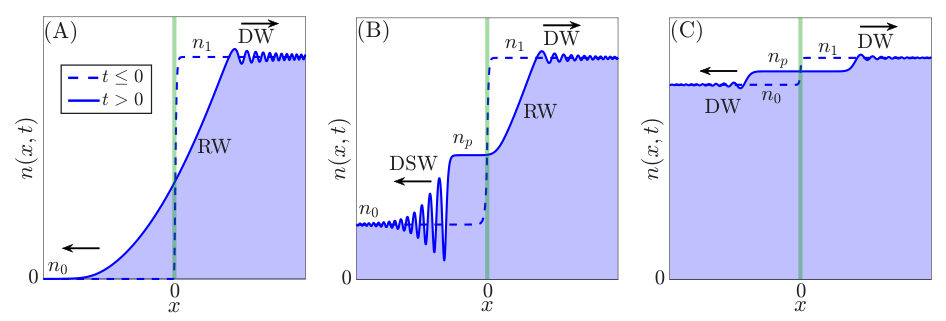
<figcaption class="paper-figure-caption"><b>Fig 1.</b> Figure 1: Three classes of dam breaking within a zero-temperature BEC, obtained numer- ically via equation (1): (A) Dry-channel ∆n = n1, (B) Wet-channel ∆n ∼n1, and (C) Perturbative wet-channel ∆n ≪n0. In all cases the condensate starts at rest with an initial step-like density profile (dashed blue lines) due to a steep potential barrier (solid green line) at x = 0 applied with different strength in the three cases. The resulting density step is soft- ened at the scale of the healing length ξ by quantum pressure. After switching the barrier off at t = 0 (i.e. dam breaking) a snapshot of the resulting condensate dynamics is depicted (solid blue lines). Depending on the situation, DWs, DSWs,...</figcaption>
</figure>
<figure class="paper-figure-card">
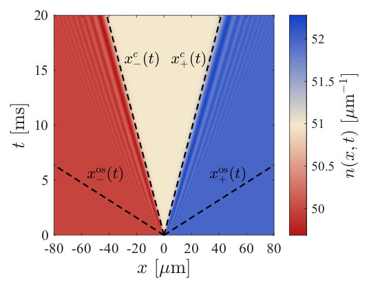
<figcaption class="paper-figure-caption"><b>Fig 2.</b> Figure 2: Sound cone formed in spacetime by the outward propagation of DWs from the site of the dam break at x = t = 0. We plot the density profile which is obtained by numerically solving the GPE (1) for the case of a perturbative wet-channel dam break with n0 = 50µm−1</figcaption>
</figure>
<figure class="paper-figure-card">
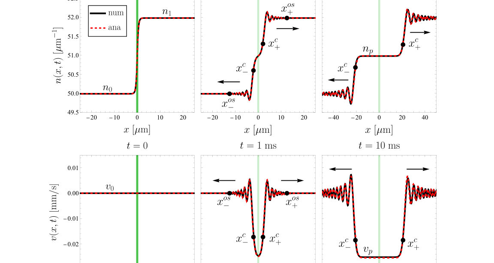
<figcaption class="paper-figure-caption"><b>Fig 3.</b> Figure 3: Snapshots of the development of undulatory bore-like waves in the density profile (top row) and flow velocity (bottom) following a perturbative dam break in a BEC, with n0 = 50µm−1, ∆n ≈0.04n0 ≪n0, and κ = 1/4. Left: Initial condition at t = 0, where the vertical green line represents the position of the initial potential barrier (dam) at x = 0. Middle and Right: t = 2 ms and t = 10 ms after dam breaking. The numerical (black) results are in near exact agreement with the analytic (red dashed) expressions given in equations (10-11) and (15-16). The slight asymmetry that can be seen in the numerical curves, particularly in the t = 10 ms flow plot, vanishes as the initial condition...</figcaption>
</figure>
<figure class="paper-figure-card">
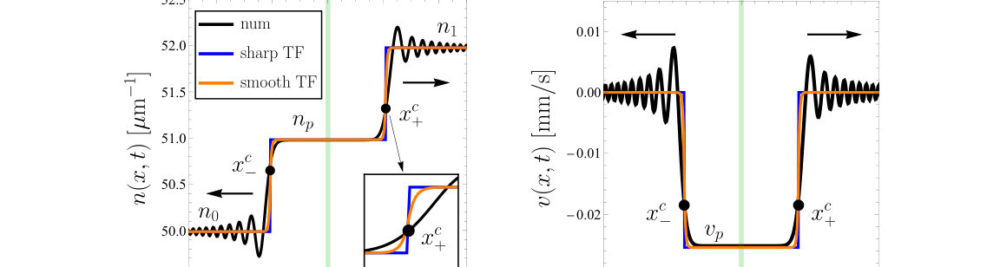
<figcaption class="paper-figure-caption"><b>Fig 4.</b> Figure 4: Comparison of standard and smoothed TF approximations for the perturbative wet-channel dam break. Left: Exact numerical (black) versus both discontinuous sharp (blue) and smoothed (orange) analytic TF limit densities at t = 10 ms. The inset highlights the differences near the wavefront xc +. Right: Same as the left, but for the flow velocity.</figcaption>
</figure>
<figure class="paper-figure-card">
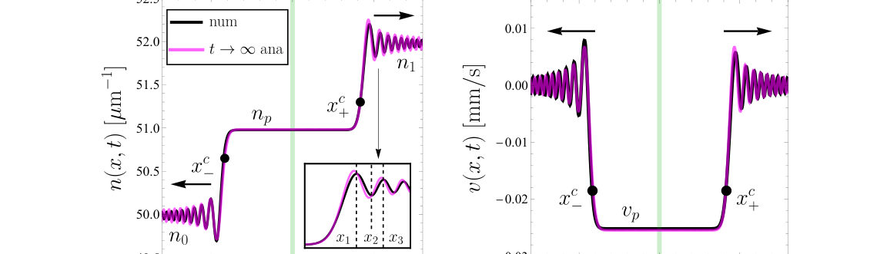
<figcaption class="paper-figure-caption"><b>Fig 5.</b> Figure 5: Integral-Airy long time asymptotic solution. Left: Integral of the Airy function (magenta) density via equations (10) and (25) versus the numerical solution of the GPE (black), at t = 20 ms after the dam break. Within the inset we label the positions of the first two crests for the upper DW as x1,3, and the first trough by x2. Right: Same as the left, but for the flow velocity.</figcaption>
</figure>
</div>

<p><strong>Summary.</strong> This paper studies the complex wave dynamics of a superfluid dam break in a BEC, treating it as a quantum analogue to classical hydrodynamic bores. By analyzing the system in different density regimes, the authors predict the formation of dispersive wavepackets, a 'silent band' analogous to a dark rainbow, and a self-induced sonic event horizon. The work connects quantum gas dynamics to fundamental concepts in general relativity and nonlinear wave theory.</p>
<p><strong>Why it may be interesting.</strong> This work is highly interesting as it bridges concepts from nonlinear wave physics (bore dynamics, caustics) directly into the realm of quantum many-body systems (BECs), providing a quantum analogue for phenomena usually associated with general relativity (event horizons).</p>
<details>
<summary>Detailed structure</summary>
<p><strong>Main problem.</strong> The paper investigates the rich wave dynamics arising from the sudden removal of a potential barrier in a Bose-Einstein condensate (BEC), modeling it as a quantum hydrodynamic dam break.</p>
<p><strong>Main result.</strong> The dynamics exhibit features analogous to classical phenomena, including dispersive wavepackets resembling undular tidal bores, the formation of a 'silent band' analogous to a dark rainbow band, and the emergence of a self-induced sonic event horizon in the non-perturbative regime.</p>
<p><strong>Method.</strong> The analysis uses the Gross-Pitaevskii equation (GPE) to study the quasi-one dimensional case in both perturbative and non-perturbative regimes, drawing parallels with established wave theories.</p>
<p><strong>Model / system.</strong> The system is a Bose-Einstein Condensate (BEC) modeled by the GPE, analyzing the dynamics across different initial density differences ($\Delta n$). The physics connects superfluid dynamics to concepts from general relativity, such as event horizons.</p>
<p><strong>Key observables.</strong> Dispersive wavepackets (DWs), the 'silent band' density plateau, and the formation of a sonic horizon.</p>
<p><strong>Important parameters / regimes.</strong> Initial density difference ($\Delta n$), the ratio of $\Delta n$ to $n_0$ (perturbative vs. non-perturbative regimes), and the characteristic length scale $\hbar^2 t$ for wave growth.</p>
<p><strong>Assumptions / limitations.</strong> The analysis relies on the GPE and makes approximations such as the local density approximation for analytic efforts, while the Thomas-Fermi approximation is used for the horizon calculation.</p>
<p><strong>Figures summary.</strong> Figure 1 illustrates three dam breaking classes (dry, wet, perturbative wet) showing the initial step profile and resulting dynamics. Figure 2 shows the sound cone formed in spacetime by outward propagating DWs.</p>
<p><strong>Paper structure.</strong> The paper systematically analyzes the dam break problem by first establishing the governing equation (GPE), then analyzing the perturbative regime to find analytic solutions related to Airy functions and double rainbows, and finally examining the non-perturbative regime where a sonic horizon forms.</p>
</details>
<details>
<summary>Abstract</summary>
<p>The sudden removal of a potential barrier from a Bose-Einstein condensate (BEC) gives rise to a quantum version of a hydrodynamic dam break and leads to rich wave dynamics that have similarities to other localized defect problems such as domain wall dynamics in spin systems. Denoting $Δn$ as the initial difference in density between the upper $n_{1}$ and lower $n_{0}$ reservoirs on either side of the dam, we use the Gross-Pitaevskii equation to study the quasi-one dimensional case in both perturbative ($Δn \ll n_{0}$) and non-perturbative ($Δn \sim n_{1}$) regimes. In the perturbative regime a pair of outwardly propagating dispersive wavepackets forms which can be viewed as quantum versions of undular tidal bores that have analytic forms at long times in terms of the integrals of Airy functions with a wavelength that grows as $(\hbar^2 t)^{1/3}$. Airy functions are the universal wave functions that dress structurally stable fold caustics where pairs of rays coalesce, and, indeed, we show that the quantum dam break problem has the same ray structure as the naturally occurring caustic phenomenon of a double rainbow, including Alexander's dark band between the two bows where no light is scattered: we identify the intermediate density plateau in the dam break as an analogous `silent band' where only evanescent sound waves can exist. In the opposite regime of a non-perturbative dam break we show that a self-induced sonic horizon occurs when $Δn \geq (8/9)n_{1}$. A discussion of possible experimental schemes for amplification of quantum undulations is included as well as an alternative scheme for dispersive wave generation where a constant flow is imprinted on a BEC in box trap.</p>
</details>
<p><sub><a href="#top">↑ back to top</a></sub></p>

<p><a id="paper-2609.34995"></a></p>
<h3 id="simulation-based-quantum-system-inference-with-neural-posterior-estimation"><a href="http://arxiv.org/abs/2609.34995v1">Simulation-Based Quantum System Inference with Neural Posterior Estimation</a></h3>
<p><strong>Authors:</strong> Hang Zou, Anton Frisk Kockum, Martin Rahm, Simon Olsson<br>
<strong>Type:</strong> theory · <strong>Category:</strong> quantum information and computing · <strong>PDF:</strong> <a href="https://arxiv.org/pdf/2609.34995v1">https://arxiv.org/pdf/2609.34995v1</a><br>
<strong>Analysis basis:</strong> full PDF text, analyzed in chunks
<strong>Topic relevance:</strong> <code>analog quantum simulation</code> <strong>3/5</strong> · <code>Rydberg arrays</code> <strong>2/5</strong> · <code>methods for driven-dissipative</code> <strong>2/5</strong> · <code>quantum measurements</code> <strong>2/5</strong></p>
<div class="figure-strip-hint">↔ Scroll figures horizontally</div>
<div class="paper-figures-scroll">
<figure class="paper-figure-card">
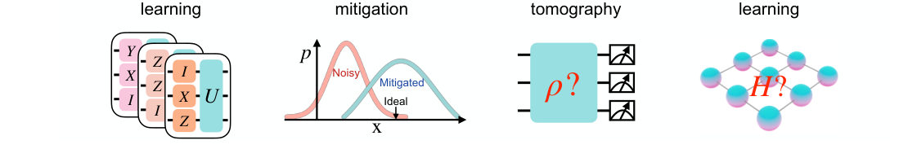
<figcaption class="paper-figure-caption"><b>Fig 1.</b> FIG. 1. Simulation-based quantum system inference. Top, schematic of the framework. Training phase (solid black arrows): parameters θ1:N sampled from a prior π(θ) are passed through a forward simulator to produce synthetic observations x1:N, on which a neural density estimator qϕ(θ|x) learns to approximate the posterior. Inference phase (red arrows): given a target observation x0 from a quantum processing unit (QPU), the trained estimator efficiently evaluates the posterior qϕ(θ|x0) without further simulation. Sequential training (dashed black arrow): an optional sequential refinement round that reuses the posterior as a new proposal. Bottom, the representative applications demonstrated in...</figcaption>
</figure>
<figure class="paper-figure-card">
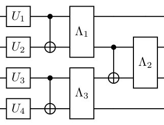
<figcaption class="paper-figure-caption"><b>Fig 2.</b> FIG. 2. Brickwall circuit template used in this study, shown for n = 4. Each qubit q is initialized by a single-qubit rotation Uq, and each gate CNOTk,k+1 is followed by a 2-local Pauli noise channel Λk.</figcaption>
</figure>
<figure class="paper-figure-card">
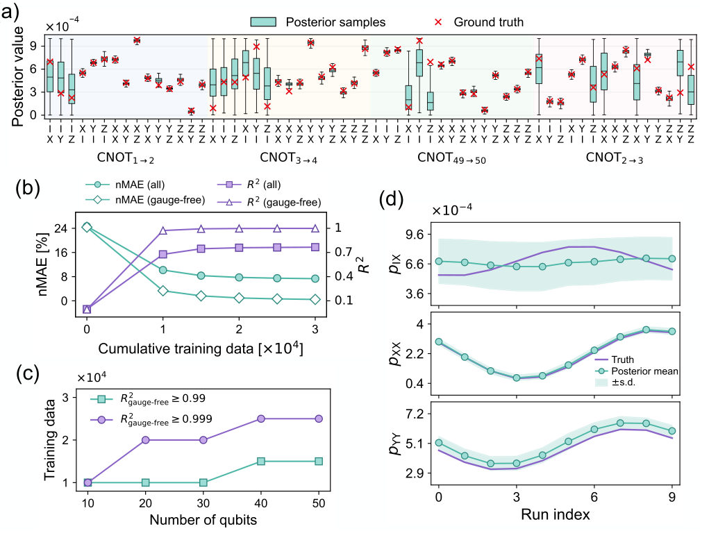
<figcaption class="paper-figure-caption"><b>Fig 3.</b> FIG. 3. Scalable Pauli noise learning with NPE. (a) Posterior distributions of Pauli error coefficients for four representative CNOT gates within a 50-qubit brickwall circuit, shown as box plots over 2,000 posterior samples. Gates are ordered by brickwall layer, with odd-control gates first, rather than by qubit index. The inference is performed using an amortized NPE model trained on 30,000 simulations. Red crosses denote ground-truth values. Broad posteriors on specific parameters reflect gauge ambiguity (see main text and Appendix D). (b) Convergence of nMAE and R2 as a function of cumulative training data across SNPE rounds for the 50-qubit model, starting from 10,000 simulations and...</figcaption>
</figure>
<figure class="paper-figure-card">
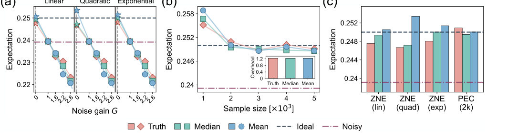
<figcaption class="paper-figure-caption"><b>Fig 4.</b> FIG. 4. ZNE and PEC based on the SBI noise posterior. All protocols are parameterized by the ground-truth noise (red), the SBI posterior median (green), and the posterior mean (blue). (a) Zero-noise extrapolation (ZNE) of the expectation value ⟨Z5Z6Z7Z8⟩for a 15-qubit probe state. Mitigated estimates at the zero-noise limit (G = 0, star) are obtained via linear (left), quadratic (middle), and exponential (right) extrapolation from unmitigated (G = 1) and probabilistic-error-amplified (G ∈{1.6, 2.2, 2.8}) results, with each expectation value estimated using 2,000 random circuit samples per gain level. (b) Convergence of the PEC estimate for the same observable as a function of the total...</figcaption>
</figure>
<figure class="paper-figure-card">
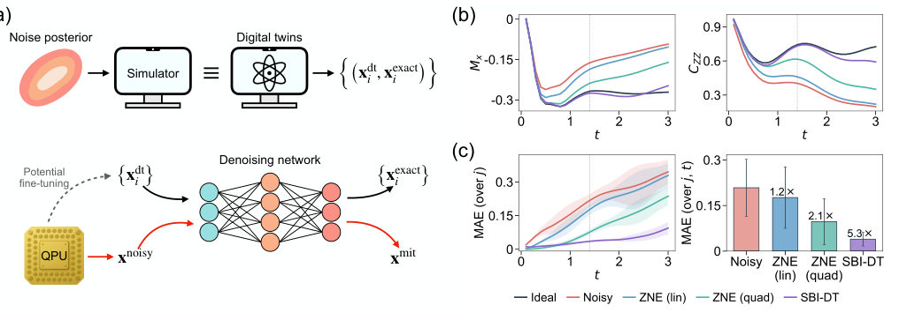
<figcaption class="paper-figure-caption"><b>Fig 5.</b> FIG. 5. Digital-twin ML-QEM with the SBI noise posterior. (a) Workflow. Training phase: the noise posterior drives a classical simulator to produce paired data {(xdt i , xexact i )} for training a denoising network (black arrows), with optional fine-tuning on real data (gray arrows). Deployment phase: the pre-trained network maps noisy outputs xnoisy to mitigated estimates xmit (red arrows). (b, c) Application to Trotterized dynamics of 12-qubit Ising chains, comparing ideal, raw noisy, linear and quadratic ZNE (gate folding at noise gains G ∈{1, 3, 5}; see Appendix F 2), and SBI-DT. (b) Time-evolved transverse magnetization Mx (left) and nearest-neighbor correlations CZZ (right), averaged...</figcaption>
</figure>
</div>

<p><strong>Summary.</strong> This paper presents a novel, likelihood-free framework for quantum system inference called Simulation-Based Inference (SBI). It uses neural normalizing flows to learn the posterior distribution of system parameters directly from classical simulation data. This approach significantly accelerates characterization efforts, enabling accurate parameter estimation for large-scale quantum devices by treating the inference problem as a fixed, upfront computational cost.</p>
<p><strong>Why it may be interesting.</strong> This work provides a powerful, general methodology for characterizing complex quantum hardware and processes by bypassing the need to compute intractable likelihoods, which is crucial for experimental quantum information science.</p>
<details>
<summary>Detailed structure</summary>
<p><strong>Main problem.</strong> The core challenge is performing quantum system parameter inference (the inverse problem) when the likelihood function is computationally intractable due to the exponentially large Hilbert space.</p>
<p><strong>Main result.</strong> The proposed framework successfully characterizes and improves large-scale quantum systems by accurately estimating parameters from measurement data, even for complex noise models and large qubit counts.</p>
<p><strong>Method.</strong> It introduces Simulation-Based Inference (SBI), a likelihood-free framework that pairs polynomial-cost classical simulators with Neural Posterior Estimation (NPE) using normalizing flows.</p>
<p><strong>Model / system.</strong> The framework applies to general quantum systems, including circuits up to 81 qubits, Rydberg atom arrays, and processes characterized by a Hamiltonian, where parameters define the system's dynamics.</p>
<p><strong>Key observables.</strong> Expectation values of observables (e.g., Pauli observables) collected from measurement ensembles.</p>
<p><strong>Important parameters / regimes.</strong> System parameters ($    heta$) such as noise probabilities, Hamiltonian coefficients, or state parameters; the approach scales to 81 qubits and 735 latent parameters.</p>
<p><strong>Assumptions / limitations.</strong> The method assumes the availability of polynomial-cost classical simulators that can accurately approximate the quantum forward map, and the posterior estimation relies on the accuracy of the learned normalizing flow.</p>
<p><strong>Figures summary.</strong> Figures illustrate the schematic of the SBI framework, showing the training phase (sampling $  heta    o x$) and the rapid inference phase using the learned posterior $q_\phi(	heta|x)$.</p>
<p><strong>Paper structure.</strong> The paper introduces the SBI framework, details the use of NPE with normalizing flows, and then demonstrates its versatility across multiple applications: Pauli noise learning, Quantum Error Mitigation, Quantum State Tomography, and Hamiltonian learning.</p>
</details>
<details>
<summary>Abstract</summary>
<p>Models of quantum systems faithfully map system parameters to observations, but the inverse problem of parameter inference from measurement data presents a fundamental challenge: computationally intractable likelihoods due to an exponentially large Hilbert space. Here, we introduce simulation-based quantum system inference, a unified, likelihood-free framework that learns parameter posteriors directly from classical simulation data. The central idea is to pair polynomial-cost classical simulators, such as Pauli propagation and tensor networks, with normalizing flows or other neural density estimators for accurate, reusable inference. A single model, trained once, maps any new measurement record to its posterior in one forward pass---turning per-experiment inference into a fixed, up-front cost. We numerically demonstrate the framework's versatility across Pauli noise learning, quantum error mitigation, quantum state tomography, and Hamiltonian learning, with examples involving 81-qubit shallow circuits and 735-parameter inference. In each case, the approach yields accurate estimates of identifiable parameters, while posterior uncertainty provides additional diagnostics of non-identifiability and indicates where further characterization is needed. Our framework reduces data-acquisition requirements in quantum experiments and accelerates parameter inference, providing a practical route to characterizing and improving large-scale quantum systems.</p>
</details>
<p><sub><a href="#top">↑ back to top</a></sub></p>

<p><a id="paper-2609.33567"></a></p>
<h3 id="terminal-register-certification-for-finite-measurement-learning-of-multiscale-quantum-states"><a href="http://arxiv.org/abs/2609.33567v1">Terminal-Register Certification for Finite-Measurement Learning of Multiscale Quantum States</a></h3>
<p><strong>Authors:</strong> Bhvain Makwana, Kashyap Patel, Manjunath Joshi, Jaideep Mulherkar<br>
<strong>Type:</strong> theory · <strong>Category:</strong> quantum information and computing · <strong>PDF:</strong> <a href="https://arxiv.org/pdf/2609.33567v1">https://arxiv.org/pdf/2609.33567v1</a><br>
<strong>Analysis basis:</strong> full PDF text, analyzed in chunks
<strong>Topic relevance:</strong> <code>analog quantum simulation</code> <strong>3/5</strong> · <code>methods for driven-dissipative</code> <strong>3/5</strong> · <code>quantum measurements</code> <strong>3/5</strong></p>
<div class="figure-strip-hint">↔ Scroll figures horizontally</div>
<div class="paper-figures-scroll">
<figure class="paper-figure-card">
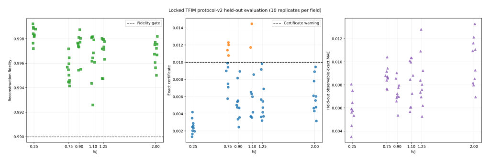
<figcaption class="paper-figure-caption"><b>Fig 1.</b> Figure 1: Locked n = 8 held-out evaluation. Every run exceeds the fidelity gate. Orange certificate points identify the six runs above the prespecified 0.01 warning threshold; these are certificate non-tightness observations, not reconstruction failures.</figcaption>
</figure>
<figure class="paper-figure-card">
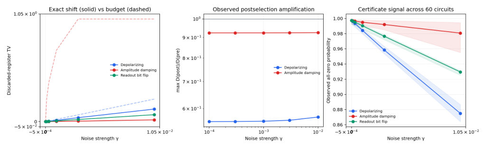
<figcaption class="paper-figure-caption"><b>Fig 2.</b> Figure 2: Fixed-circuit robustness validation. Exact terminal distribution shifts remain below their conservative calibrated budgets. The validation covers implementation soundness, not convergence of training under noise.</figcaption>
</figure>
<figure class="paper-figure-card">
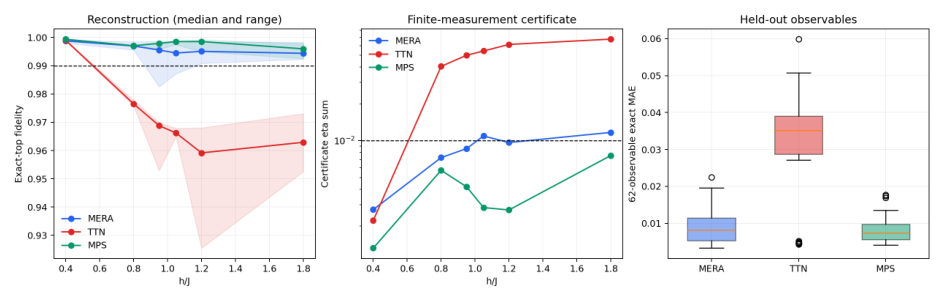
<figcaption class="paper-figure-caption"><b>Fig 3.</b> Figure 3: Eight-qubit architecture comparison. MPS is slightly better than MERA in fidelity, whereas removing MERA disentanglers to obtain TTN causes a pronounced degradation.</figcaption>
</figure>
<figure class="paper-figure-card">
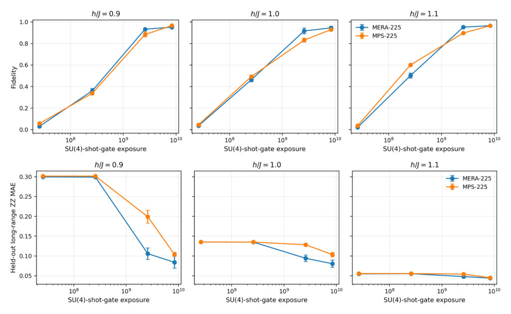
<figcaption class="paper-figure-caption"><b>Fig 4.</b> Figure 4: Approximately matched aggregate SU(4)-shot-gate exposure. Points show fieldwise means over ten paired replicates; the response is not assumed monotone. At the largest exposure, fidelity is unresolved while long-range error favors MERA-PM225.</figcaption>
</figure>
<figure class="paper-figure-card">
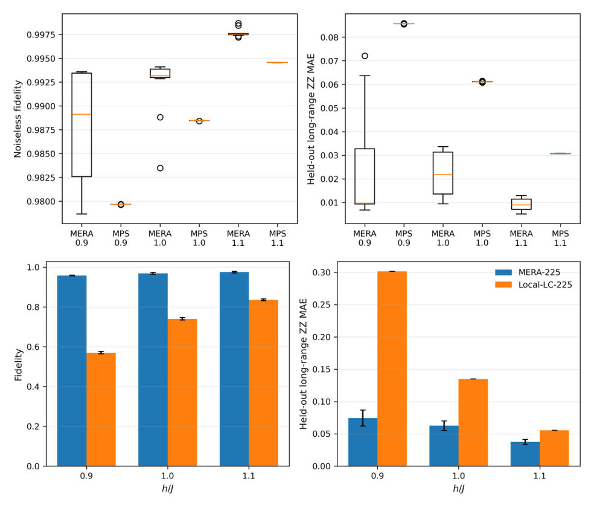
<figcaption class="paper-figure-caption"><b>Fig 5.</b> Figure 5: Top: exact-gradient 20-restart diagnostic; error bars summarize restart variation and do not certify global optimality. Bottom: the causal-cone-complete local control, which has equal coordinates and greater aggregate gate exposure than MERA-PM225.</figcaption>
</figure>
</div>

<p><strong>Summary.</strong> This work introduces a 'terminal-register certification' framework to reliably reconstruct complex quantum states, like those from the Ising model, using limited measurement data. By developing rigorous mathematical identities and finite-shot bounds, the authors demonstrate that the MERA ansatz provides a superior, verifiable method for capturing long-range entanglement compared to simpler tensor network or local circuit models.</p>
<p><strong>Why it may be interesting.</strong> The rigorous development of operational certificates that account for finite measurements is crucial for translating theoretical quantum simulation power into practical, verifiable quantum computation protocols.</p>
<details>
<summary>Detailed structure</summary>
<p><strong>Main problem.</strong> The paper addresses the challenge of learning structured quantum states from finite measurement data while ensuring the operational certificate remains meaningful despite measurement imperfections and finite sampling.</p>
<p><strong>Main result.</strong> They establish a 'terminal-register certification' protocol, demonstrating that MERA provides a resource-qualified advantage over MPS and local circuits for reconstructing long-range quantum structure in the near-critical regime.</p>
<p><strong>Method.</strong> The core method involves developing an exact identity relating reconstruction fidelity to the top state fidelity and the terminal measurement probability, coupled with finite-shot confidence bounds.</p>
<p><strong>Model / system.</strong> The study focuses on pure one-dimensional quantum states, specifically using the inverse binary MERA ansatz to represent the ground state of the open-boundary transverse field Ising model.</p>
<p><strong>Key observables.</strong> Reconstruction fidelity (F), conditional top state fidelity (F_top), long-range connected-ZZ error, half-chain-entropy error, and energy density error.</p>
<p><strong>Important parameters / regimes.</strong> The number of qubits (e.g., $n=8, n=16$), the number of simulated training measurements ($560$ million), and confidence parameters ($\delta_D, \delta_T$).</p>
<p><strong>Assumptions / limitations.</strong> The analysis relies on the causal-discard condition and assumes a calibrated total variation implementation budget is applied to the finite shot certificate to maintain soundness.</p>
<p><strong>Figures summary.</strong> The notes summarize comparisons across multiple diagnostic tests, including held-out performance metrics (Table 8 &amp; 10) and paired difference analyses ($\Delta F, \Delta ELR$) comparing MERA against MPS and local circuits (Table 9 &amp; 11).</p>
<p><strong>Paper structure.</strong> The paper builds from establishing the fundamental identity for reconstruction fidelity, deriving finite-shot confidence bounds for both the global failure event and the top state fidelity, and finally applying this framework to compare MERA against competing architectures (MPS, local circuits) on the TFIM ground state.</p>
</details>
<details>
<summary>Abstract</summary>
<p>Structured quantum-state learning not only depends on an expressive ansatz but also on an operational certificate that stays meaningful with finite measurements and imperfect implementation. We study pure one dimensional states learning by an inverse binary multiscale entanglement renormalization ansatz (MERA). In the learning procedure, the qubits removed during coarse graining are controlled coherently and measured together at the terminal register. We confirm that an ideal sequential and terminal measurement schedule delivers the same complete bit string distribution under matched causal operations, while normalized postselection can amplify perturbations inversely with prefix acceptance. A noise aware theorem introduces an individual calibrated total variation implementation budget to the finite shot certificate. The protocol is estimated on an open boundary transverse field Ising ground state. A frozen 8-qubit schedule using $560$ million simulated training measurements per run achieves fidelity above $0.99$ in all $60$ held-out runs, with a mean fidelity of $0.996886$. 1080 circuit-noise cells and 6480 confidence-coverage rows are covered by fixed-circuit robustness validation without a locked soundness violation. We then address architectural fairness at $n=16$ using three new studies. In a 120-run exact-gradient multistart diagnostic, MERA has higher fidelity in 58/60 paired restarts and lower long-range error in 60/60, although no run met the prespecified stationarity criterion. Finally, a causal cone-complete, parameter matched local circuit achieves $2.62\times$ greater aggregate gate exposure yet loses all 30 paired comparisons in fidelity, long-range error, energy, and entropy.</p>
</details>
<p><sub><a href="#top">↑ back to top</a></sub></p>

<p><a id="paper-2609.35270"></a></p>
<h3 id="attraction-controlled-torque-organization-and-rotational-states-in-frictional-granular-matter"><a href="http://arxiv.org/abs/2609.35270v1">Attraction-controlled torque organization and rotational states in frictional granular matter</a></h3>
<p><strong>Authors:</strong> Kiwamu Yoshii<br>
<strong>Type:</strong> theory · <strong>Category:</strong> disordered systems and neural networks · <strong>PDF:</strong> <a href="https://arxiv.org/pdf/2609.35270v1">https://arxiv.org/pdf/2609.35270v1</a><br>
<strong>Analysis basis:</strong> full PDF text, analyzed in chunks
<strong>Topic relevance:</strong> <code>non-equilibrium universality</code> <strong>3/5</strong> · <code>Frenkel-Kontorova</code> <strong>1/5</strong> · <code>analog quantum simulation</code> <strong>1/5</strong> · <code>driven-dissipative phase transition</code> <strong>1/5</strong> · <code>methods for driven-dissipative</code> <strong>1/5</strong> · <code>scars &amp; prethermalization</code> <strong>1/5</strong></p>
<div class="figure-strip-hint">↔ Scroll figures horizontally</div>
<div class="paper-figures-scroll">
<figure class="paper-figure-card">
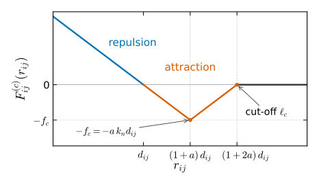
<figcaption class="paper-figure-caption"><b>Fig 1.</b> FIG. 1. Schematic of the normal force F (c) ij (rij) [Eq. (3)]. The attractive branch continuously extends the elastic spring from rij = dij, reaches −fc,ij = −akndij at rij = (1 + a)dij, and vanishes at the cutoffℓc,ij = (1 + 2a)dij.</figcaption>
</figure>
<figure class="paper-figure-card">
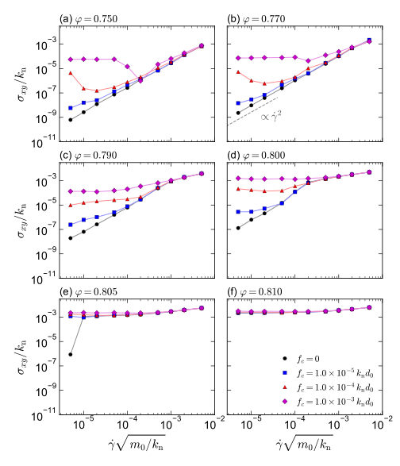
<figcaption class="paper-figure-caption"><b>Fig 2.</b> FIG. 2. Flow curves σxy(˙γ) for (a) ϕ = 0.750, (b) 0.770, (c) 0.790, (d) 0.800, (e) 0.805, and (f) 0.810. The symbols represent the attraction strength: fc = 0 (black circles), fc = 10−5knd0 (blue squares), fc = 10−4knd0 (red triangles), and fc = 10−3knd0 (magenta diamonds). The dashed line in (b) represents the Bagnold scaling σxy ∝˙γ2.</figcaption>
</figure>
<figure class="paper-figure-card">

<figcaption class="paper-figure-caption"><b>Fig 3.</b> Figure 2 shows the shear stress as a function of the shear rate. The shear stress is defined as the sum of the kinetic and virial contributions:</figcaption>
</figure>
<figure class="paper-figure-card">
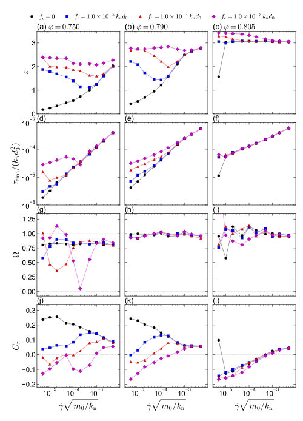
<figcaption class="paper-figure-caption"><b>Fig 4.</b> FIG. 3. Shear-rate dependence of the contact and rotational statistics for ϕ = 0.750, 0.790, and 0.805 (columns). The symbols are the same as those in Fig. 2. (a)–(c) Coordination number z, (d)–(f) torque amplitude τrms, (g)–(i) normalized mean spin Ω, and (j)–(l) torque-sign correlation between con- tacting particles Cτ. The dotted lines indicate Ω= 1 (affine rotation), Ω= 0, and Cτ = 0, respectively.</figcaption>
</figure>
<figure class="paper-figure-card">
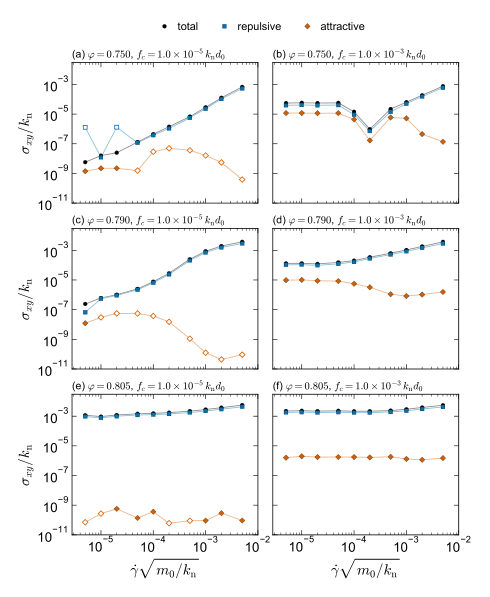
<figcaption class="paper-figure-caption"><b>Fig 5.</b> FIG. 4. Shear-stress decomposition for ϕ = 0.750, 0.790, and 0.805 (rows) and fc = 10−5knd0 and 10−3knd0 (columns). Black circles, blue squares, and orange diamonds represent the total shear stress σxy, the repulsive contribution σrep xy , and the attractive contribution σatt xy , respectively. The total stress also includes tangential, normal dissipative, and kinetic contributions. Open symbols indicate negative values plotted by their absolute magnitudes.</figcaption>
</figure>
</div>

<p><strong>Summary.</strong> This work numerically explores how short-range attraction modifies the mechanical behavior of frictional granular matter. The key finding is that attraction's influence is not merely additive stress but fundamentally reorganizes the frictional contact network. This reorganization dictates macroscopic rheological states, such as the emergence of an adhesive plateau and a low-density stress-collapse regime.</p>
<p><strong>Why it may be interesting.</strong> The study's focus on non-equilibrium steady states, jamming transitions, and the role of local structural correlations (like torque sign correlation) in determining macroscopic rheology shares conceptual links with understanding phase transitions in complex, interacting many-body systems.</p>
<details>
<summary>Detailed structure</summary>
<p><strong>Main problem.</strong> The study investigates how interparticle attraction influences stress transmission, torque organization, and particle rotation in a 2D frictional granular material.</p>
<p><strong>Main result.</strong> Attraction controls macroscopic rheology by reorganizing the frictional contact network, leading to an adhesive stress plateau, selecting a high-stress state, and creating a distinct stress-collapse regime.</p>
<p><strong>Method.</strong> Numerical simulations (LAMMPS) were used to model the system under applied shear rates, analyzing stress decomposition and contact network statistics.</p>
<p><strong>Model / system.</strong> The system is a two-dimensional frictional granular material, modeled as a binary mixture of particles subjected to normal, tangential, and attractive central forces.</p>
<p><strong>Key observables.</strong> Shear stress ($\sigma_{xy}$), coordination number ($z$), torque amplitude ($ au_{rms}$), mean spin ($\Omega$), and torque-sign correlation ($C_  au$).</p>
<p><strong>Important parameters / regimes.</strong> Attraction strength ($f_c$), packing fraction ($\phi$), and shear rate ($\dot{\gamma}$).</p>
<p><strong>Assumptions / limitations.</strong> The analysis distinguishes between the direct attractive virial stress and the stress modification arising from the reorganization of the frictional contact network.</p>
<p><strong>Figures summary.</strong> Figures illustrate flow curves ($\sigma_{xy}$ vs. $\dot{\gamma}$) showing different rheological branches, and state maps showing the dependence of rotational statistics ($\Omega$ and $C_	au$) on shear rate and packing fraction.</p>
<p><strong>Paper structure.</strong> The paper systematically analyzes the rheological response across various flow states (low-rate, high-rate, plateau, collapse) by decomposing the shear stress and examining structural metrics like coordination number and torque correlations.</p>
</details>
<details>
<summary>Abstract</summary>
<p>In this study, we numerically investigate how interparticle attraction affects stress transmission, torque organization, and particle rotation in a two-dimensional frictional granular material. Although the attraction is a central force and exerts no direct torque on the particles, it strongly modifies the contact network and particle rotation. Attraction produces a low-rate stress state and selects the high-stress state near the shear-thickening regime of the dry system, while leaving the high-rate thickened state almost unchanged. By decomposing the shear stress, we find that the direct attractive contribution accounts for only a fraction of the total stress, while the repulsive contribution is strongly enhanced. Attraction increases the coordination number and torque amplitude and can reverse the local torque-sign correlation. At low packing fractions and intermediate shear rates, a stress-collapse state emerges with strongly suppressed torque and rotation despite a finite contact network. These results show that attraction controls macroscopic rheology through reorganization of the frictional contact network.</p>
</details>
<p><sub><a href="#top">↑ back to top</a></sub></p>

<p><a id="paper-2609.32314"></a></p>
<h3 id="continuously-varying-exponents-in-the-distribution-of-waiting-times-in-the-symmetric-exclusion-process-on-a-percolation-cluster"><a href="http://arxiv.org/abs/2609.32314v1">Continuously varying exponents in the distribution of waiting times in the symmetric exclusion process on a percolation cluster</a></h3>
<p><strong>Authors:</strong> Arpan Chatterjee, Kabir Ramola, Deepak Dhar<br>
<strong>Type:</strong> theory · <strong>Category:</strong> statistical mechanics · <strong>PDF:</strong> <a href="https://arxiv.org/pdf/2609.32314v1">https://arxiv.org/pdf/2609.32314v1</a><br>
<strong>Analysis basis:</strong> full PDF text, analyzed in chunks
<strong>Topic relevance:</strong> <code>non-equilibrium universality</code> <strong>3/5</strong> · <code>analog quantum simulation</code> <strong>1/5</strong> · <code>correlated / nonlocal dissipation</code> <strong>1/5</strong> · <code>driven-dissipative phase transition</code> <strong>1/5</strong> · <code>methods for driven-dissipative</code> <strong>1/5</strong> · <code>scars &amp; prethermalization</code> <strong>1/5</strong></p>
<div class="figure-strip-hint">↔ Scroll figures horizontally</div>
<div class="paper-figures-scroll">
<figure class="paper-figure-card">
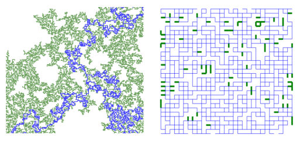
<figcaption class="paper-figure-caption"><b>Fig 1.</b> FIG. 1. Representative spanning clusters. The left panel shows a critical bond percolation cluster generated on a 200 × 200 lattice, with the backbone highlighted in blue and side branches highlighted in green. The right panel shows a system-spanning cluster on a 30 × 30 lattice at p = 0.70.</figcaption>
</figure>
<figure class="paper-figure-card">
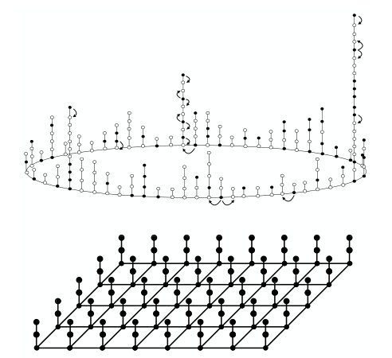
<figcaption class="paper-figure-caption"><b>Fig 2.</b> FIG. 2. Schematic diagrams of the models studied. Top: irregular comb with exponentially distributed side-branch lengths. The particles (dark circles) perform symmetric exclu- sion moves (arrows). For clarity, only a subset of the possible particle hopping moves is shown. Bottom: The carpet graph with side branches of depth H = 2.</figcaption>
</figure>
<figure class="paper-figure-card">
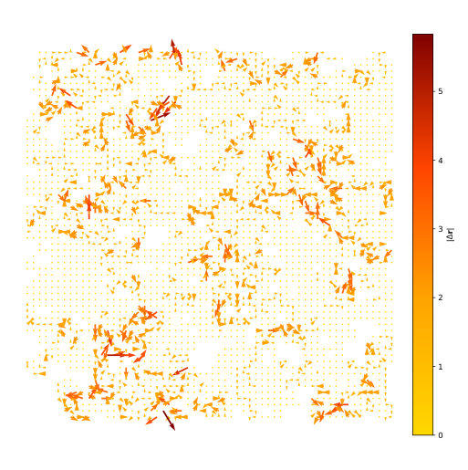
<figcaption class="paper-figure-caption"><b>Fig 3.</b> FIG. 3. Displacement field on a percolation cluster (at p = 0.56) revealing dynamical heterogeneity. Arrows repre- sent particle displacements |∆r| over a fixed time interval of ∆t = 100 on a 60×60 lattice at packing fraction ρ = 0.96, col- ored by displacement magnitude. The color bar indicates the magnitude of the displacements, ranging from 0 (yellow) to &gt; 5 (red). Yellow highlights the immobile regions in the per- colation cluster, while red regions highlight maximally mo- bile particles. The vast majority of particles remain frozen (|∆r| ≈0), forming a heterogeneous immobile background, while a small fraction execute large cooperative displacements organized into string-like mobile...</figcaption>
</figure>
<figure class="paper-figure-card">
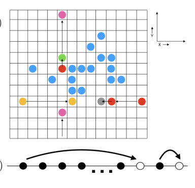
<figcaption class="paper-figure-caption"><b>Fig 4.</b> FIG. 4. (a) Schematic illustration of several lifted-SEP (LSEP) update events on the floor of the 2D carpet. Con- sider first the red–green pair: at time t, the red particle is selected for an LSEP move in direction +ˆy with displacement D = 8. The red particle immediately collides with the green particle, which then propagates freely for three steps before colliding with the pink particle. The pink particle continues for the remaining three steps, wrapping once around the peri- odic lattice to complete the move. A second example involves the yellow particle, chosen with D = 5 in the +ˆx direction, which moves freely for the entire displacement. Additional example moves are also shown....</figcaption>
</figure>
<figure class="paper-figure-card">
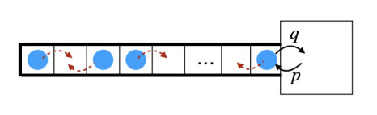
<figcaption class="paper-figure-caption"><b>Fig 5.</b> FIG. 5. Schematic of a single branch illustrating the micro- scopic dynamical rules. Particles enter and leave the branch through the rightmost site, which is connected to a particle reservoir maintained at density ρ. Entry and exit occur with rates p = ρ and q = 1 −ρ, respectively. The transitions indi- cated by dotted arrows occur with unit rate.</figcaption>
</figure>
</div>

<p><strong>Summary.</strong> This work analyzes particle transport in the Symmetric Exclusion Process on disordered lattices mimicking percolation clusters. It finds that the system's dynamics are characterized by a power-law decay in the return probability, with the decay exponent continuously depending on particle density. This highlights how topological disorder induces strong, density-dependent dynamical heterogeneity.</p>
<p><strong>Why it may be interesting.</strong> The connection between topological disorder (percolation) and non-equilibrium dynamics (SEP) is highly relevant to understanding transport in disordered quantum systems, such as those modeled by disordered spin glasses or quantum impurities.</p>
<details>
<summary>Detailed structure</summary>
<p><strong>Main problem.</strong> The study investigates the waiting-time distribution of hard-core interacting particles undergoing the Symmetric Exclusion Process (SEP) on complex, disordered geometries like percolation clusters.</p>
<p><strong>Main result.</strong> The system exhibits strong dynamical heterogeneity, leading to a power-law decay of the return probability $P_{ret}(t) \sim t^{-\omega}$, where the exponent $\omega$ varies continuously with particle density $
ho$.</p>
<p><strong>Method.</strong> The authors combine numerical simulations with approximate analytical treatments, modeling the system as a backbone with attached side-branch traps.</p>
<p><strong>Model / system.</strong> The model is the SEP on a lattice structure derived from a supercritical percolation cluster, simplified initially by a 'carpet' geometry. The dynamics are governed by hard-core interactions, leading to trapping in side branches.</p>
<p><strong>Key observables.</strong> Waiting time distribution ($\psi(	au_w)$), return probability decay exponent ($\omega$), and dynamical heterogeneity peaks in $\log t_w$.</p>
<p><strong>Important parameters / regimes.</strong> Particle density ($
ho$), percolation bond probability ($p$), and the correlation length ($\xi$) related to the cluster structure.</p>
<p><strong>Assumptions / limitations.</strong> The analysis often relies on approximating the complex cluster dynamics by considering contributions from individual side branches (single-branch approximation), though multi-branch models improve accuracy.</p>
<p><strong>Figures summary.</strong> Figures illustrate representative spanning clusters, schematic diagrams of the carpet/comb model, and plots showing the power-law decay of survival probabilities and waiting time histograms.</p>
<p><strong>Paper structure.</strong> The paper progresses from studying the SEP on simplified geometries (carpet) to developing analytical tools based on eigenvalue expansions for single branches, culminating in the application to full, irregular percolation clusters to derive the density-dependent exponent $\omega$.</p>
</details>
<details>
<summary>Abstract</summary>
<p>We study the waiting-time distribution of hard-core interacting particles in the symmetric exclusion process on one- and two-dimensional lattices with side branches attached to each lattice site in the steady state. We use numerical simulations together with an approximate analytical treatment of particles trapped in side branches in the steady state. Such a two-dimensional carpet serves as a simplified model for trapping of a supercritical percolation cluster. At high particle densities, the system exhibits strong dynamical heterogeneity, with the distribution of logarithms of waiting times developing well-separated peaks corresponding to particles trapped at different depths from the backbone. We show that the probability that a tagged particle occupies the same position at time $t_0+t$ as at time $t_0$ decays algebraically as $t^{-ω}$, where the exponent $ω$ varies continuously with particle density for densities above a threshold value $ρ^*<1$. We also investigate the correlations between successive waiting times along the trajectory of a tagged particle.</p>
</details>
<p><sub><a href="#top">↑ back to top</a></sub></p>

<p><a id="paper-2609.34859"></a></p>
<h3 id="correlation-measure-for-statistical-systems"><a href="http://arxiv.org/abs/2609.34859v1">Correlation measure for statistical systems</a></h3>
<p><strong>Authors:</strong> V. I. Yukalov, E. P. Yukalova<br>
<strong>Type:</strong> theory · <strong>Category:</strong> statistical mechanics · <strong>PDF:</strong> <a href="https://arxiv.org/pdf/2609.34859v1">https://arxiv.org/pdf/2609.34859v1</a><br>
<strong>Analysis basis:</strong> full PDF text, analyzed in chunks
<strong>Topic relevance:</strong> <code>analog quantum simulation</code> <strong>3/5</strong> · <code>Keldysh / 2PI / non-Gaussian methods</code> <strong>1/5</strong> · <code>correlated / nonlocal dissipation</code> <strong>1/5</strong> · <code>driven-dissipative phase transition</code> <strong>1/5</strong> · <code>methods for driven-dissipative</code> <strong>1/5</strong> · <code>non-equilibrium universality</code> <strong>1/5</strong></p>
<div class="figure-strip-hint">↔ Scroll figures horizontally</div>
<div class="paper-figures-scroll">
<figure class="paper-figure-card">
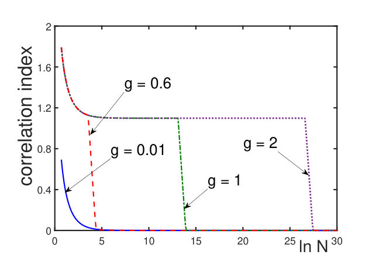
<figcaption class="paper-figure-caption"><b>Fig 1.</b> Figure 1: Behavior of the correlation index κ(ˆρ2) as a function of ln N for different coupling parameters g.</figcaption>
</figure>
<figure class="paper-figure-card">
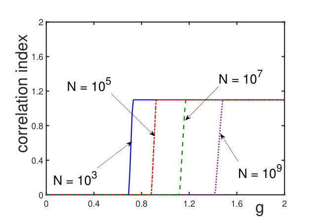
<figcaption class="paper-figure-caption"><b>Fig 2.</b> Figure 2: Behavior of the correlation index κ(ˆρ2) as a function of the coupling parameter g for different N.</figcaption>
</figure>
<figure class="paper-figure-card">
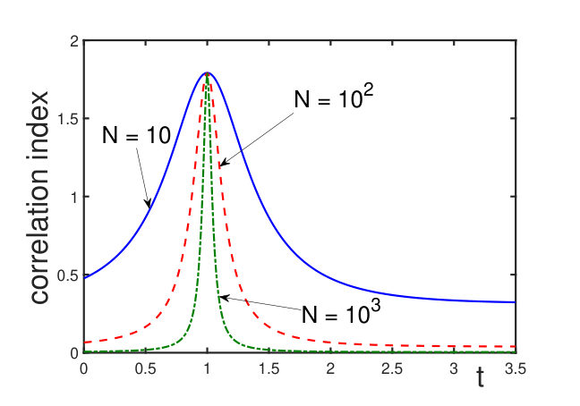
<figcaption class="paper-figure-caption"><b>Fig 3.</b> Figure 3: Behavior of the correlation index κ( ˆC2) as a function of dimensionless time t for different N.</figcaption>
</figure>
<figure class="paper-figure-card">
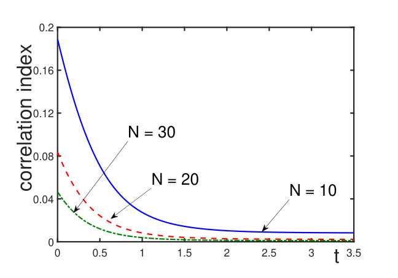
<figcaption class="paper-figure-caption"><b>Fig 4.</b> Figure 4: Behavior of the correlation index κ( ˆW2) as a function of dimensionless time t for different N.</figcaption>
</figure>
</div>

<p><strong>Summary.</strong> This work introduces the correlation index, a general measure quantifying correlations in quantum and classical statistical systems. It applies this index to model complex phenomena in Bose-Einstein condensates, superconductors, and spin lattices. The resulting tool offers a powerful, unified diagnostic for studying correlation strength across equilibrium and non-equilibrium regimes.</p>
<p><strong>Why it may be interesting.</strong> The index provides a unified, mathematically rigorous diagnostic tool applicable across quantum many-body physics, linking concepts like entanglement entropy to measurable correlation strengths in systems ranging from superfluids to magnetic materials.</p>
<details>
<summary>Detailed structure</summary>
<p><strong>Main problem.</strong> The paper develops a general, quantitative measure called the 'correlation index' ($\kappa$) to quantify the degree of correlations in diverse statistical systems.</p>
<p><strong>Main result.</strong> The index successfully measures entanglement in quantum states and provides quantitative diagnostics for correlations in both equilibrium (e.g., BEC, superconductors) and non-equilibrium systems.</p>
<p><strong>Method.</strong> The index is defined using the ratio of operator norms: $\kappa(\hat{A}) \equiv \log rac{||\hat{A}||}{||\hat{A}^{\otimes}||}$, applied to reduced density matrices ($\hat{
ho}_2$) derived via partial tracing.</p>
<p><strong>Model / system.</strong> The theory is applied across multiple systems, including Bose-Einstein condensates (BECs), superconducting systems (BCS model), and general spin systems, covering both equilibrium and non-equilibrium dynamics.</p>
<p><strong>Key observables.</strong> Correlation Index ($\kappa(\hat{A})$), Reduced Density Matrices ($\hat{
ho}_2$), Von Neumann Entanglement Entropy ($S_E$), Condensate fraction ($n_0$).</p>
<p><strong>Important parameters / regimes.</strong> Number of particles ($N$), Coupling parameter ($g$), Time ($t$), and the nature of the correlation (e.g., normal vs. anomalous averages in superconductors).</p>
<p><strong>Assumptions / limitations.</strong> Approximations include the Hartree-Fock-Bogolubov (HFB) approximation for superconductors and the use of partial traces to simplify density operators.</p>
<p><strong>Figures summary.</strong> Figures illustrate how $\kappa(\hat{
ho}_2)$ changes with system size ($N$) or coupling strength ($g$) for BECs and superconductors, and how time-dependent correlations evolve in spin systems.</p>
<p><strong>Paper structure.</strong> The paper first introduces the general definition of the correlation index, then applies it to equilibrium systems like BECs and superconductors, and finally extends the analysis to non-equilibrium dynamics in spin and pseudospin systems.</p>
</details>
<details>
<summary>Abstract</summary>
<p>A measure of correlations for statistical systems is advanced, called correlation index. The measure is general, being applicable to quantum and classical, equilibrium and nonequilibrium statistical systems. After formulating the general notion of correlation indices for arbitrary trace-class operators, the calculation of the correlation indices are illustrated by several examples of density operators and reduced density matrices. The computation of the correlation indices for equilibrium systems is exemplified for bosonic systems with the Bose-Einstein condensate, superconducting systems, and for spin systems. Correlation indices for nonequilibrium systems are considered for nonlinear dynamics of spin and pseudospin systems.</p>
</details>
<p><sub><a href="#top">↑ back to top</a></sub></p>

<p><a id="paper-2609.34793"></a></p>
<h3 id="efficient-simulation-of-hybrid-continuous-and-discrete-variable-quantum-circuits-via-gaussian-decompositions"><a href="http://arxiv.org/abs/2609.34793v1">Efficient Simulation of Hybrid Continuous- and Discrete-Variable Quantum Circuits via Gaussian Decompositions</a></h3>
<p><strong>Authors:</strong> Kazufumi Tanji, Dot Belin Pio, Shohei Kiryu, Ulrik Lund Andersen, Masahiro Takeoka<br>
<strong>Type:</strong> theory · <strong>Category:</strong> quantum information and computing · <strong>PDF:</strong> <a href="https://arxiv.org/pdf/2609.34793v1">https://arxiv.org/pdf/2609.34793v1</a><br>
<strong>Analysis basis:</strong> full PDF text, analyzed in chunks
<strong>Topic relevance:</strong> <code>analog quantum simulation</code> <strong>3/5</strong> · <code>methods for driven-dissipative</code> <strong>3/5</strong> · <code>Keldysh / 2PI / non-Gaussian methods</code> <strong>1/5</strong> · <code>Tavis-Cummings &amp; cavity-many-emitter</code> <strong>1/5</strong></p>
<div class="figure-strip-hint">↔ Scroll figures horizontally</div>
<div class="paper-figures-scroll">
<figure class="paper-figure-card">
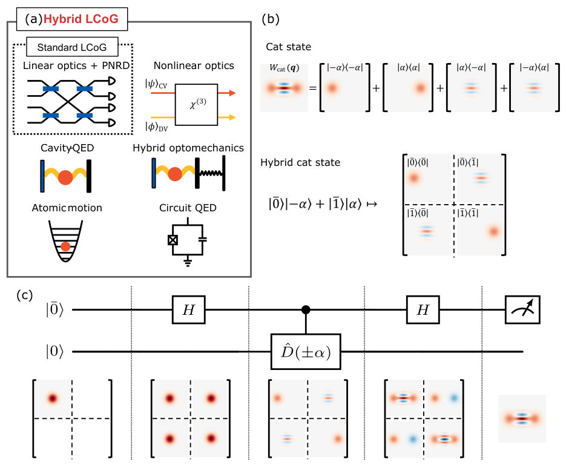
<figcaption class="paper-figure-caption"><b>Fig 1.</b> FIG. 1. Summary of hybrid LCoG formalism. (a) Target physical platforms: linear and nonlinear photonic systems, cavity- QED, atomic motion, hybrid optomechanical system, and circuit QED system. (b) Examples of LCoG decomposition of a cat state (upper panel) and hybrid LCoG decomposition of a hybrid cat state (lower panel). The cat state is decomposed into two diagonal terms (|±α⟩⟨±α|) and two off-diagonal terms (|±α⟩⟨∓α|). In phase space, the diagonal terms are represented by a real Gaussian function, while the off-diagonal terms are represented by complex Gaussian functions. Only real parts are shown here. In the hybrid cat state, the Gaussian functions are assigned to the corresponding...</figcaption>
</figure>
<figure class="paper-figure-card">
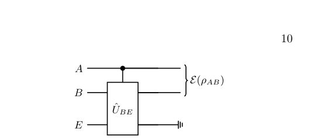
<figcaption class="paper-figure-caption"><b>Fig 2.</b> FIG. 3. Stinespring dilation of a controlled Gaussian chan- nel. A controlled Gaussian unitary ˆUBE acts on both the bosonic subsystem B and the environment E. The state in the environment is initially in a Gaussian state. Tracing out the environment leads to a Gaussian channel E(ρAB).</figcaption>
</figure>
<figure class="paper-figure-card">
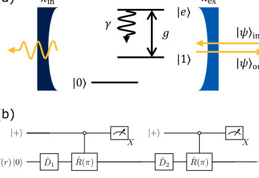
<figcaption class="paper-figure-caption"><b>Fig 3.</b> FIG. 4. Implementation of the controlled phase rotation gate on the cavity-QED system and the circuit for GKP state gen- eration. (a) Cavity-QED system with atom-cavity coupling g, intracavity loss rate κin, and external coupling rate κex. (b) Encoding circuit for a GKP state based on iterative measure- ments.</figcaption>
</figure>
<figure class="paper-figure-card">
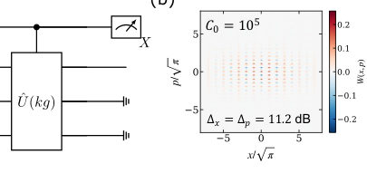
<figcaption class="paper-figure-caption"><b>Fig 4.</b> FIG. 5. (a) Circuit model of the controlled phase-rotation gate based on the cavity-QED system. The Gaussian uni- tary ˆU(kg) depends on the qubit state k, reflecting state- dependent atom-cavity coupling. Here, ρin denotes the input state, |0⟩l denotes the vacuum state at the intracavity loss mode, and |0⟩γ denotes the vacuum state at the atomic scat- tering mode. These two loss modes are traced out after the interaction. (b) Generated GKP state with ∆x = ∆p = 11.2 dB effective squeezing.</figcaption>
</figure>
<figure class="paper-figure-card">

<figcaption class="paper-figure-caption"><b>Fig 5.</b> Figure 5(b) shows the generated GKP state after three encoding blocks. Here, we characterize the generated GKP state by effective squeezing [86]:</figcaption>
</figure>
</div>

<p><strong>Summary.</strong> This paper presents an efficient simulation framework for quantum systems that combine discrete qubits and continuous bosonic modes. By utilizing Linear Combination of Gaussians (LCoG) decomposition, the authors overcome the exponential scaling limitations of simulating these hybrid systems. This tool allows for the analysis of complex quantum algorithms and state generation protocols in various physical platforms.</p>
<p><strong>Why it may be interesting.</strong> This work provides a crucial computational tool for analyzing complex quantum algorithms and quantum simulation protocols in modern hybrid quantum hardware architectures, bridging theoretical formalism with practical simulation limits.</p>
<details>
<summary>Detailed structure</summary>
<p><strong>Main problem.</strong> The classical simulation of hybrid quantum systems combining discrete-variable (DV) and continuous-variable (CV) subsystems is computationally intractable due to exponential cost increases.</p>
<p><strong>Main result.</strong> The authors introduce a simulation framework using Linear Combination of Gaussians (LCoG) decomposition that scales polynomially with the number of modes, avoiding Fock-space truncation.</p>
<p><strong>Method.</strong> The framework decomposes the hybrid density matrix into blocks in a DV basis and represents each block using an LCoG expansion, deriving analytic rules for controlled Gaussian operations.</p>
<p><strong>Model / system.</strong> The method applies to hybrid quantum systems encompassing both qubit (DV) and bosonic modes (CV), relevant to platforms like cavity-QED and photonic circuits.</p>
<p><strong>Key observables.</strong> The Wigner function of the density matrix, $\hat{
ho}$, and its representation as a linear combination of Gaussian functions.</p>
<p><strong>Important parameters / regimes.</strong> The number of bosonic modes ($M$), the number of qubits ($N$), and the number of Gaussian terms ($L$).</p>
<p><strong>Assumptions / limitations.</strong> The state can be accurately represented as a linear combination of Gaussian states (LCoG).</p>
<p><strong>Figures summary.</strong> Figure 1 illustrates the hybrid LCoG formalism, showing target physical platforms and an example circuit for cat state generation in the hybrid LCoG representation.</p>
<p><strong>Paper structure.</strong> The paper first reviews the necessary formalism (Wigner function, Gaussian states, LCoG) before deriving the transformation rules for Gaussian and controlled Gaussian operations acting on the hybrid LCoG state representation.</p>
</details>
<details>
<summary>Abstract</summary>
<p>Hybrid quantum systems combining discrete-variable (DV) and continuous-variable (CV) subsystems arise across a broad range of physical platforms and enable quantum information processing beyond purely qubit-based designs. Their classical simulation, however, is challenging since computational costs of both CV and DV systems exponentially increase. In this paper, we introduce a simulation framework for CV--DV hybrid systems based on linear combination of Gaussian (LCoG) decomposition. We decompose the hybrid density matrix into blocks in a DV basis and represent each block as an LCoG expansion. Within the representation, Gaussian operations on the bosonic subsystem independently act on each Gaussian function. We derive analytic formulas describing how complex Gaussian functions transform under controlled Gaussian operations. We further extend the framework to controlled Gaussian channels with state-dependent Gaussian noise. The method avoids a Fock-space truncation for the CV subsystem, and the cost of updating each Gaussian term scales polynomially with the number of modes. The framework provides a general computational tool for analyzing hybrid quantum algorithms, quantum simulation protocols, and non-Gaussian state generation schemes. As an example, we simulate Gottesman--Kitaev--Preskill (GKP) state generation based on a cavity-QED system.</p>
</details>
<p><sub><a href="#top">↑ back to top</a></sub></p>

<p><a id="paper-2609.35076"></a></p>
<h3 id="classical-bound-on-the-fisher-information-rate-of-a-dephasing-enhanced-quantum-neuron"><a href="http://arxiv.org/abs/2609.35076v1">Classical Bound on the Fisher Information Rate of a Dephasing-Enhanced Quantum Neuron</a></h3>
<p><strong>Authors:</strong> Peng Wang, Yu-Xuan Zhang, Hai-Tao Ding, Leong-Chuan Kwek<br>
<strong>Type:</strong> theory · <strong>Category:</strong> disordered systems and neural networks · <strong>PDF:</strong> <a href="https://arxiv.org/pdf/2609.35076v1">https://arxiv.org/pdf/2609.35076v1</a><br>
<strong>Analysis basis:</strong> full PDF text, analyzed in chunks
<strong>Topic relevance:</strong> <code>quantum measurements</code> <strong>3/5</strong> · <code>methods for driven-dissipative</code> <strong>2/5</strong> · <code>correlated / nonlocal dissipation</code> <strong>1/5</strong> · <code>driven-dissipative phase transition</code> <strong>1/5</strong></p>
<div class="figure-strip-hint">↔ Scroll figures horizontally</div>
<div class="paper-figures-scroll">
<figure class="paper-figure-card">
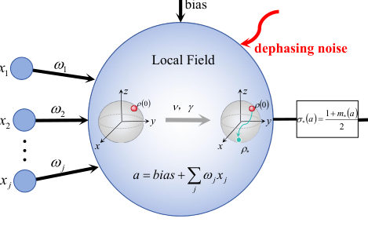
<figcaption class="paper-figure-caption"><b>Fig 1.</b> FIG. 1. Schematic of the dephasing-enhanced quantum neu- ron studied here. The classical inputs xj and weights ωj, together with the bias, form the dimensionless local field a = bias+P</figcaption>
</figure>
<figure class="paper-figure-card">
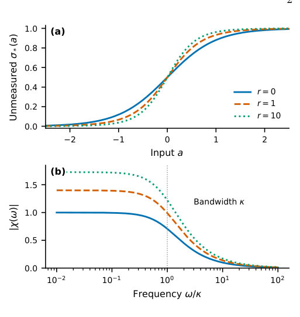
<figcaption class="paper-figure-caption"><b>Fig 2.</b> FIG. 2. Stationary response before repeated readout. (a) The activation from Eq. (5). (b) The threshold susceptibility from Eq. (7). Dephasing raises the gain while leaving the relative 3-dB bandwidth κ unchanged at fixed s. Here s = 0.8 and r = γ/[ν(1 −s2)]. All curves are theoretical.</figcaption>
</figure>
<figure class="paper-figure-card">
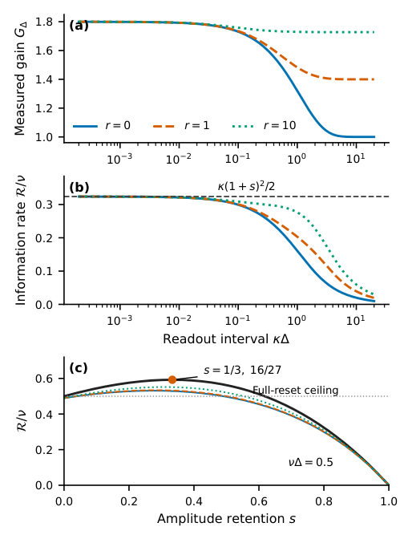
<figcaption class="paper-figure-caption"><b>Fig 3.</b> FIG. 3. Information from repeated projective readouts. (a) Measurement-dependent gain and (b) exact information rate at s = 0.8, for r = 0, 1, 10. The dashed horizontal line in (b) is Eq. (12). (c) The bound as a function of s (black), with its optimum s = 1/3. Colored curves use ν∆= 0.5 and fixed γ/ν = 0, 0.36, 3.6, respectively; their r values therefore vary with s. The dotted horizontal line is the full-reset ceiling. All rates refer to estimation of the dimensionless input at a = 0.</figcaption>
</figure>
</div>

<p><strong>Summary.</strong> This work establishes a rigorous, finite-time bound on the information rate achievable by a quantum neuron subject to environmental dephasing and repeated measurements. The key finding is that while quantum coherence can modify the measurement record, the ultimate operational information throughput is limited by a classical process. This separates the effects of noise-enhanced activation from true information capacity.</p>
<p><strong>Why it may be interesting.</strong> It provides a hardware-aware benchmark for quantum neural processing, quantifying the fundamental limit on information extraction from open quantum systems, which is crucial for understanding decoherence effects in quantum computation.</p>
<details>
<summary>Detailed structure</summary>
<p><strong>Main problem.</strong> To determine the operational information throughput (Fisher information rate) of a quantum neuron, distinguishing it from stationary measures, especially under repeated projective readouts.</p>
<p><strong>Main result.</strong> The optimal information rate bound is $16
u/27$, which is saturated by a classical two-state jump process, indicating that quantum coherence does not enhance the maximum achievable throughput.</p>
<p><strong>Method.</strong> The authors derive the exact local Fisher information rate for the complete measurement record, optimizing over readout intervals and retained amplitudes ($s$).</p>
<p><strong>Model / system.</strong> The system is a single-qubit quantum neuron modeled by a Lindblad master equation incorporating partial-reset updates ($
u$) and dephasing ($\gamma$).</p>
<p><strong>Key observables.</strong> Fisher information rate ($R(\Delta)$), stationary activation ($\sigma^*(a)$), and susceptibility ($\chi(\omega)$).</p>
<p><strong>Important parameters / regimes.</strong> Update rate ($
u$), dephasing rate ($\gamma$), retained amplitude ($s$), and readout interval ($\Delta$).</p>
<p><strong>Assumptions / limitations.</strong> The analysis considers the complete measurement record and assumes the optimal bound is classical, even if coherence modifies the record at fixed cadences.</p>
<p><strong>Figures summary.</strong> Figures illustrate the schematic of the neuron, the stationary response vs. dephasing rate, and the dependence of the information rate on the readout interval ($\Delta$) and retention parameter ($s$).</p>
<p><strong>Paper structure.</strong> The paper progresses from defining the system dynamics via the Lindblad equation to deriving the time-normalized information rate bound, optimizing this bound over parameters like $s$ and $\Delta$, and finally comparing the quantum bound to classical saturation limits.</p>
</details>
<details>
<summary>Abstract</summary>
<p>Dephasing can sharpen the activation of a dissipative quantum neuron, but a stationary response does not determine how much input information its output delivers per unit time. For a single qubit with partial-reset updates at rate $ν$, we derive the threshold response bandwidth and the exact local Fisher information rate of the complete record from repeated projective readouts, including their backaction. Near the activation threshold, the rate obeys $\mathcal R\leqν(1-s)(1+s)^2/2\leq16ν/27$, where $s$ is the retained amplitude of each update. For every fixed finite Markovian dephasing rate, optimization over the readout interval and $s$ gives the same supremum, approached at $s=1/3$ with arbitrarily rapid ideal readout. A finite measurement dead time instead selects a finite optimal interval, which we obtain by a dimensionless two-parameter optimization. The ideal bound is saturated by a classical two-state jump process: quantum coherence changes finite-cadence performance but cannot raise the optimized bound. These results separate noise-enhanced activation from the operational information throughput of a quantum neuron and provide a hardware-aware benchmark for finite-time quantum neural processing.</p>
</details>
<p><sub><a href="#top">↑ back to top</a></sub></p>

<p><a id="paper-2609.35265"></a></p>
<h3 id="gauge-freedom-and-efficient-algorithms-for-lindbladian-learning"><a href="http://arxiv.org/abs/2609.35265v1">Gauge freedom and efficient algorithms for Lindbladian learning</a></h3>
<p><strong>Authors:</strong> Steven T Flammia, Savar D Sinha, Yu Tong<br>
<strong>Type:</strong> theory · <strong>Category:</strong> other · <strong>PDF:</strong> <a href="https://arxiv.org/pdf/2609.35265v1">https://arxiv.org/pdf/2609.35265v1</a><br>
<strong>Analysis basis:</strong> full PDF text, analyzed in chunks
<strong>Topic relevance:</strong> <code>methods for driven-dissipative</code> <strong>3/5</strong> · <code>quantum measurements</code> <strong>2/5</strong> · <code>correlated / nonlocal dissipation</code> <strong>1/5</strong> · <code>driven-dissipative phase transition</code> <strong>1/5</strong></p>
<div class="figure-strip-hint">↔ Scroll figures horizontally</div>
<div class="paper-figures-scroll">
<figure class="paper-figure-card">
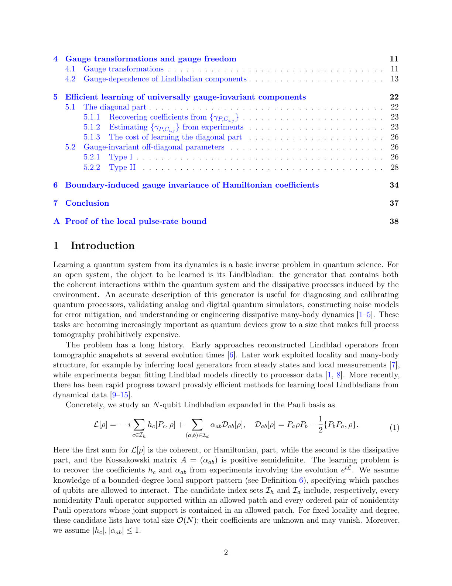
<figcaption class="paper-figure-caption"><b>Fig 1.</b> Low-resolution page preview, page 2</figcaption>
</figure>
<figure class="paper-figure-card">
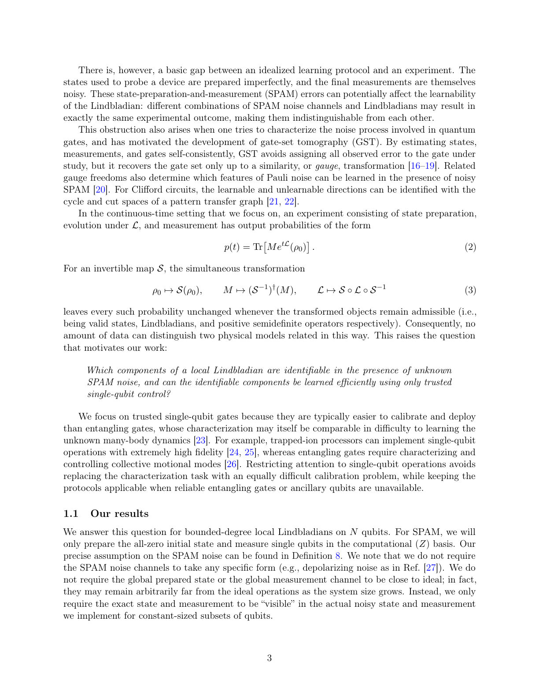
<figcaption class="paper-figure-caption"><b>Fig 2.</b> Low-resolution page preview, page 3</figcaption>
</figure>
<figure class="paper-figure-card">
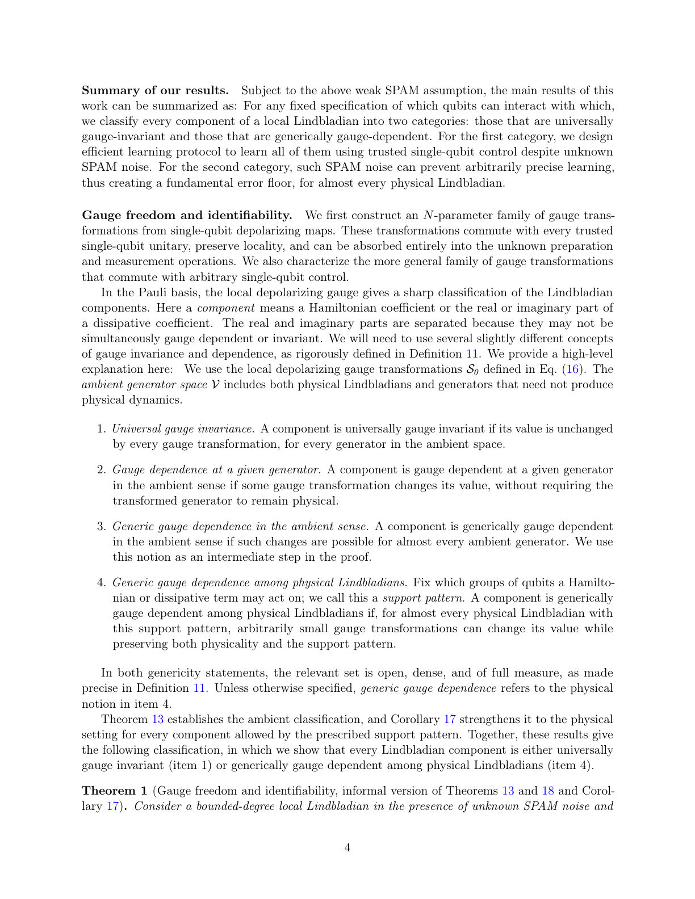
<figcaption class="paper-figure-caption"><b>Fig 3.</b> Low-resolution page preview, page 4</figcaption>
</figure>
<figure class="paper-figure-card">
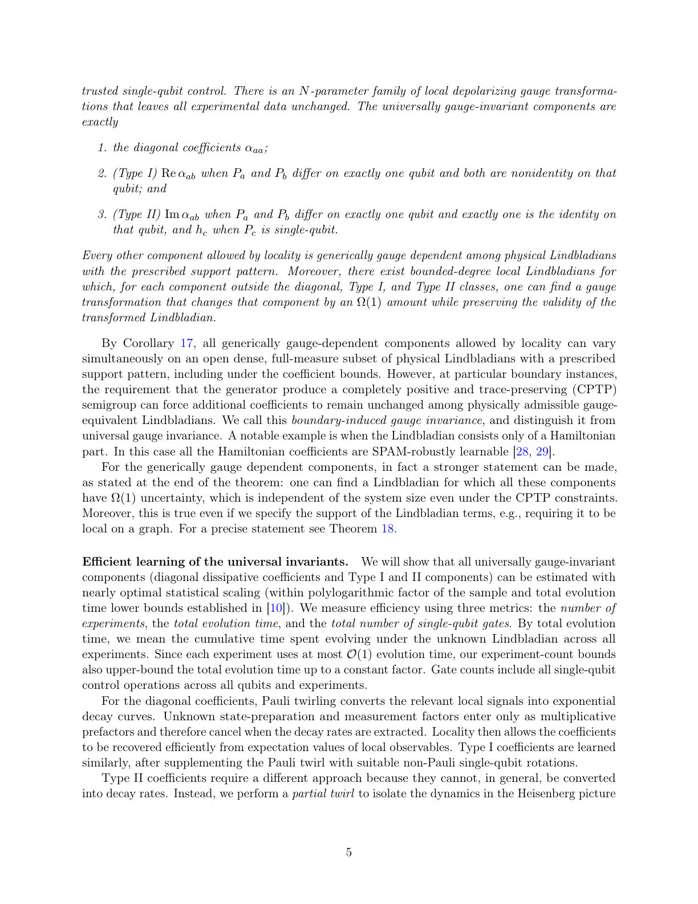
<figcaption class="paper-figure-caption"><b>Fig 4.</b> Low-resolution page preview, page 5</figcaption>
</figure>
<figure class="paper-figure-card">
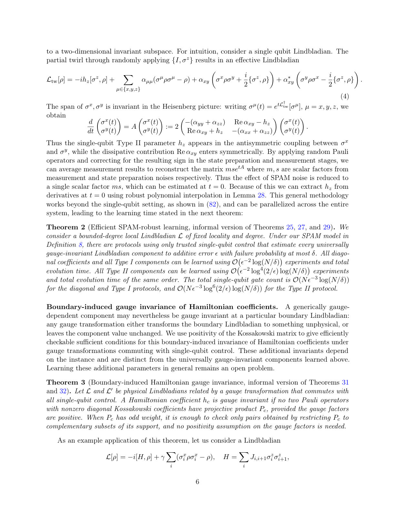
<figcaption class="paper-figure-caption"><b>Fig 5.</b> Low-resolution page preview, page 6</figcaption>
</figure>
</div>

<p><strong>Summary.</strong> This paper tackles the difficult problem of extracting the true dynamics (Lindbladian) of an open quantum system from noisy measurements corrupted by SPAM noise. It mathematically proves that only certain 'gauge-invariant' parts of the dynamics are fundamentally measurable. The authors then develop efficient, resource-bounded quantum algorithms to estimate these robustly measurable parameters using only single-qubit operations.</p>
<p><strong>Why it may be interesting.</strong> This work provides a rigorous, resource-aware framework for characterizing open quantum systems from noisy experimental data, directly impacting the feasibility of quantum process tomography and quantum control.</p>
<details>
<summary>Detailed structure</summary>
<p><strong>Main problem.</strong> The paper addresses the fundamental challenge of learning the parameters of a local Lindbladian describing open quantum system dynamics when the process is corrupted by State-Preparation-and-Measurement (SPAM) noise.</p>
<p><strong>Main result.</strong> It provides a sharp characterization showing that only universally gauge-invariant components of the Lindbladian are fundamentally learnable, while others suffer from an irreducible uncertainty floor due to SPAM noise.</p>
<p><strong>Method.</strong> The authors employ gauge transformation theory to classify Lindbladian components and develop specialized, SPAM-robust quantum estimation algorithms restricted to single-qubit operations.</p>
<p><strong>Model / system.</strong> The system is an open quantum system whose dynamics are governed by a local Lindbladian $\mathcal{L}$, which is characterized by Hamiltonian coefficients and dissipative Kossakowski matrix elements. The learning is performed experimentally using only trusted single-qubit control.</p>
<p><strong>Key observables.</strong> Lindbladian coefficients (Hamiltonian $h_c$ and dissipative $\alpha_{ab}$), and the ability to distinguish between universally gauge-invariant and generically gauge-dependent components.</p>
<p><strong>Important parameters / regimes.</strong> The required experimental resources scale as $\widetilde{\mathcal O}(\epsilon^{-2}\log(N/\delta))$ for learnable components, where $\epsilon$ is the desired precision and $N$ is the system size.</p>
<p><strong>Assumptions / limitations.</strong> The analysis assumes the existence of trusted single-qubit control and models the noise as SPAM noise, leading to the classification of learnable vs. unlearnable parameters.</p>
<p><strong>Paper structure.</strong> The paper proceeds by first establishing the theoretical obstruction caused by SPAM noise, then using gauge theory to classify Lindbladian components into invariant and dependent sets, and finally constructing efficient, resource-bounded algorithms for the invariant components.</p>
</details>
<details>
<summary>Abstract</summary>
<p>We study the problem of learning a local Lindbladian in the presence of state-preparation-and-measurement (SPAM) noise. Although recent work has developed scalable learning algorithms under idealized access assumptions, SPAM can make distinct Lindbladians experimentally indistinguishable, thus making part of the Lindbladian fundamentally unlearnable. We give a sharp characterization of this obstruction for bounded-degree local Lindbladians. We identify a family of locality-preserving gauge transformations that commutes with trusted single-qubit control, and use it to classify Lindbladian components. For the generically gauge dependent components, we construct Lindbladians to show that they can have $Ω(1)$ uncertainty independent of system size, even after imposing complete positivity.   We complement this characterization with SPAM-robust algorithms for learning every universally gauge-invariant component. Our algorithms use only trusted single-qubit operations, require neither ancillas nor entangling control, and use $\widetilde{\mathcal O}\left(ε^{-2}\log(N/δ)\right)$ experiments and total evolution time for constant locality and degree. Our guarantees allow global SPAM to become arbitrarily far from ideal as $N$ grows, requiring only nonvanishing local visibility. We also establish sufficient conditions for boundary-induced gauge invariance of additional Hamiltonian coefficients under physical positivity constraints, though learning these additional parameters in general remains an open problem. More broadly, our gauge-aware framework and SPAM-cancellation techniques offer a practical toolkit for the scalable characterization of open quantum systems.</p>
</details>
<p><sub><a href="#top">↑ back to top</a></sub></p>

<p><a id="paper-2609.34803"></a></p>
<h3 id="general-photon-subtraction-from-a-gaussian-perspective"><a href="http://arxiv.org/abs/2609.34803v1">General Photon Subtraction from a Gaussian Perspective</a></h3>
<p><strong>Authors:</strong> Niklas Budinger, Ulrik L. Andersen, Peter van Loock<br>
<strong>Type:</strong> theory · <strong>Category:</strong> quantum information and computing · <strong>PDF:</strong> <a href="https://arxiv.org/pdf/2609.34803v1">https://arxiv.org/pdf/2609.34803v1</a><br>
<strong>Analysis basis:</strong> full PDF text, analyzed in chunks
<strong>Topic relevance:</strong> <code>quantum measurements</code> <strong>3/5</strong> · <code>Keldysh / 2PI / non-Gaussian methods</code> <strong>2/5</strong> · <code>Full counting statistics</code> <strong>1/5</strong> · <code>methods for driven-dissipative</code> <strong>1/5</strong></p>
<div class="figure-strip-hint">↔ Scroll figures horizontally</div>
<div class="paper-figures-scroll">
<figure class="paper-figure-card">
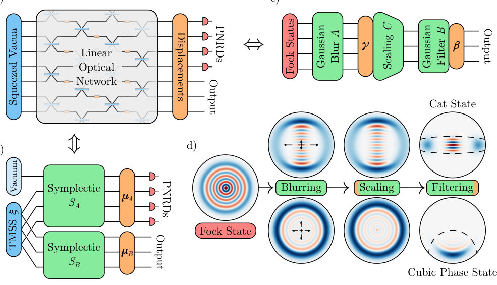
<figcaption class="paper-figure-caption"><b>Fig 1.</b> FIG. 1: Schematic representation of the GBS-like experimental setup as well as equivalent theoretical descriptions used for generating a pure photon-subtracted Gaussian (PSG) state. a) In the experiment, squeezed vacua are sent through a passive linear optical network followed by potential displacements. A subset of modes is measured by photon-number resolving detectors (PNRDs) resulting in a PSG state dependent on the measured photon number pattern. b) An array of two-mode squeezed states (TMSS) is split into two paths which are filled up with single-mode vacuum if necessary. The top path undergoes the symplectic operation SA and the displacement µA before being measured by the PNRDs. The...</figcaption>
</figure>
<figure class="paper-figure-card">
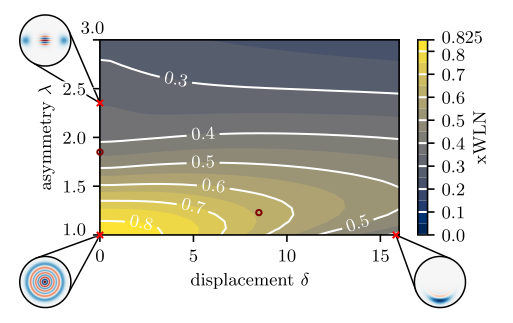
<figcaption class="paper-figure-caption"><b>Fig 2.</b> FIG. 2: Expected Wigner logarithmic negativity (xWLN) for a GBS-like setup with a single PNRD, 15 dB offline squeezing, and no loss. The standard parameters for generating Fock-, cat-, and cubic phase-like states are marked with red crosses, while the custom choices shown in Figs. 8 and 10 are indicated by red circles.</figcaption>
</figure>
<figure class="paper-figure-card">
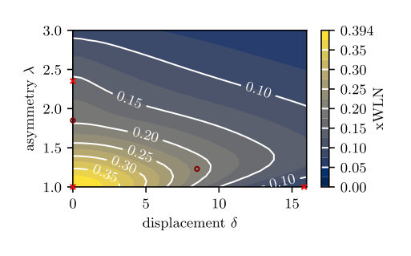
<figcaption class="paper-figure-caption"><b>Fig 3.</b> FIG. 4: Expected Wigner logarithmic negativity (xWLN) for a GBS-like setup with a single PNRD, 15 dB offline squeezing, and a photon loss of η = 0.95. The standard parameters for generating Fock-, cat-, and cubic phase-like states are marked with red crosses, while the custom choices shown in Figs. 8 and 10 are indicated by red circles.</figcaption>
</figure>
<figure class="paper-figure-card">
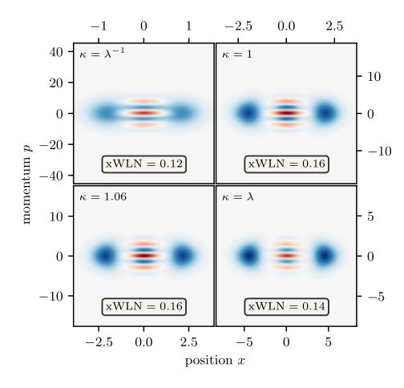
<figcaption class="paper-figure-caption"><b>Fig 4.</b> FIG. 3: Impact of the choice of κ on loss performance. Shown are a generated cat-like state as well as the total xWLN of the setup of Eq. (31) with 15 dB offline squeezing, a loss of η = 0.95, and the measurement result n1 = 5. The four values of κ represent the optimal choice for no loss (κ = λ−1), the identity (κ = 1), the optimal case (κ = 1.06), and the unsqueezed cat (κ = λ).</figcaption>
</figure>
<figure class="paper-figure-card">
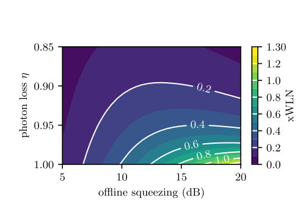
<figcaption class="paper-figure-caption"><b>Fig 5.</b> FIG. 5: Expected Wigner logarithmic negativity (xWLN) of the GBS-like setup of Eq. (30) generating Fock-like states for different amounts of offline squeezing and photon loss. The used κ values can be found in App. B.</figcaption>
</figure>
</div>

<p><strong>Summary.</strong> This paper introduces a novel Gaussian formalism to describe Photon-Subtracted Gaussian (PSG) states, which are key resources for fault-tolerant quantum computing. By modeling the Wigner function as a Gaussian blur and filter, the authors provide an intuitive way to optimize state generation by balancing success rates against experimental photon loss. This framework establishes a general lower bound on required quantum resources using the expected Wigner logarithmic negativity.</p>
<p><strong>Why it may be interesting.</strong> This work provides a powerful, unified mathematical framework for analyzing resource state generation in CV quantum optics, directly addressing the practical limitations imposed by photon loss in current experimental proposals.</p>
<details>
<summary>Detailed structure</summary>
<p><strong>Main problem.</strong> The core challenge is achieving near-deterministic generation of non-Gaussian quantum states, which are essential resources for fault-tolerant quantum computation using continuous-variable optics.</p>
<p><strong>Main result.</strong> The authors introduce a Gaussian formalism that allows for the systematic optimization of state generation by balancing success rates, feed-forward compatibility, and unavoidable photon loss.</p>
<p><strong>Method.</strong> They develop a mathematical formalism representing the Wigner function of Photon-Subtracted Gaussian (PSG) states via a Gaussian convolution and filter applied to the measured Fock Wigner function.</p>
<p><strong>Model / system.</strong> The system is continuous-variable quantum optics, utilizing Gaussian states, Photon-Number Resolving Detectors (PNRDs), and linear optical components to generate non-Gaussian states.</p>
<p><strong>Key observables.</strong> Expected Wigner logarithmic negativity ($  ext{xWLN}$), Wigner function ($W$), and Wigner negativity.</p>
<p><strong>Important parameters / regimes.</strong> Photon loss ($\eta$), squeezing levels, and various symplectic/Gaussian transformation parameters ($\Sigma, \mu, eta, \gamma$).</p>
<p><strong>Assumptions / limitations.</strong> The formalism treats initial squeezing, Gaussian measurements, and photon loss as mathematically interchangeable contributions to the total blurring and filtering process.</p>
<p><strong>Figures summary.</strong> Figures illustrate the schematic setup, the dependence of $    ext{xWLN}$ on loss and optimization parameters ($\kappa$), and comparisons between lossy and ideal state generation for cat-like and GKP-like states.</p>
<p><strong>Paper structure.</strong> The paper introduces the formalism, applies it to analyze the trade-offs in state generation (cat, GKP), proposes a hybrid setup variant for multiple subtractions, and concludes by establishing the expected Wigner logarithmic negativity as a general lower bound on required resources.</p>
</details>
<details>
<summary>Abstract</summary>
<p>A near-deterministic source of non-Gaussianity is the missing piece to reach universal and fault-tolerant quantum computing with continuous-variable optics. Due to a lack of strong non-linearities, the probabilistic photon-subtracted Gaussian states remain the most promising contender. In combination with Gaussian measurements and single-mode feed-forward operations, they have been shown to provide sufficient non-Gaussianity at high rates. However, these existing breeding protocols lack the necessary loss tolerance to be experimentally feasible. In this work, we introduce a mathematical formalism based on the application of a Gaussian blur and filter on the measured Fock Wigner function to describe general photon-subtracted Gaussian states. Within our representation, the initial squeezing, Gaussian measurements, and photon loss can all be understood as contributions to the total blurring and interchanged accordingly. We find that this intuitive approach can be used to find improvements to cat, cubic phase, and GKP state generation by compromising between success rates, feed-forward compatibility, and loss tolerance. In the case of multiple photon subtractions, this is achieved by introducing a hybrid setup variant bridging the gap between protocols based on breeding and post-selection. Finally, we establish a general lower bound on the resources needed to generate a given target state near-deterministically by introducing the expected Wigner logarithmic negativity as an additive monotone of non-Gaussianity.</p>
</details>
<p><sub><a href="#top">↑ back to top</a></sub></p>

<p><a id="paper-2609.34292"></a></p>
<h3 id="pre-registered-tests-of-solid-state-physics-inspired-llm-compression-a-cluster-level-negative-result-at-small-language-model-scale"><a href="http://arxiv.org/abs/2609.34292v1">Pre-registered tests of solid-state-physics-inspired LLM compression: a cluster-level negative result at small-language-model scale</a></h3>
<p><strong>Authors:</strong> Jun-qiang Lu<br>
<strong>Type:</strong> theory · <strong>Category:</strong> disordered systems and neural networks · <strong>PDF:</strong> <a href="https://arxiv.org/pdf/2609.34292v1">https://arxiv.org/pdf/2609.34292v1</a><br>
<strong>Analysis basis:</strong> full PDF text, analyzed in chunks
<strong>Topic relevance:</strong> <code>analog quantum simulation</code> <strong>3/5</strong> · <code>driven-dissipative phase transition</code> <strong>1/5</strong> · <code>methods for driven-dissipative</code> <strong>1/5</strong> · <code>non-equilibrium universality</code> <strong>1/5</strong> · <code>scars &amp; prethermalization</code> <strong>1/5</strong></p>
<div class="figure-strip-hint">↔ Scroll figures horizontally</div>
<div class="paper-figures-scroll">
<figure class="paper-figure-card">
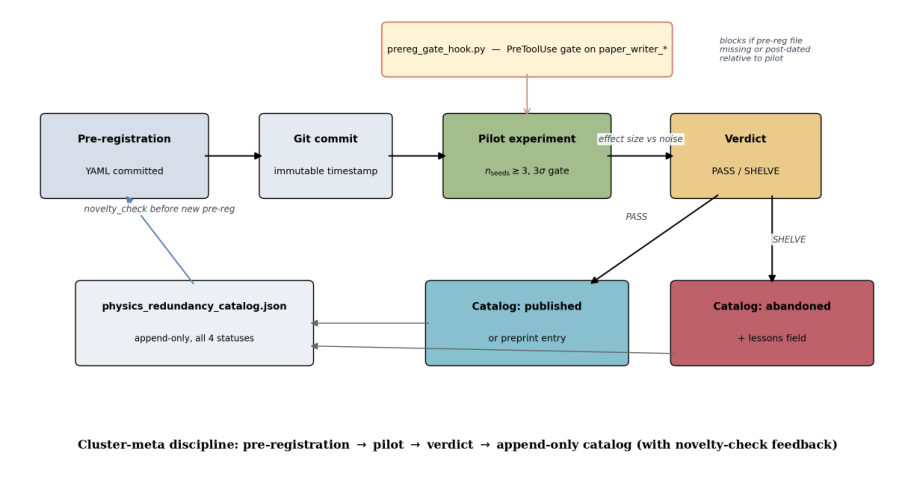
<figcaption class="paper-figure-caption"><b>Fig 1.</b> Figure 1: Block diagram of the cluster-meta discipline. Committing the pre-registration YAML to git fixes an immutable timestamp before the pilot. The pilot uses nseeds ≥3 and a 3σ effect-size gate; its PASS / SHELVE verdict creates an entry in physics_redundancy_catalog.json, either as published/preprint or as abandoned with a lessons field. Before a pre-registration is written, a novelty check queries the catalogue. It reports overlap but prevents nothing. The only tool shown that writes pre-registration files refuses one case—a file with that name already exists—and never consults the catalogue. Thus, the author reading the report, not the software, catches a duplicate (physics,...</figcaption>
</figure>
<figure class="paper-figure-card">
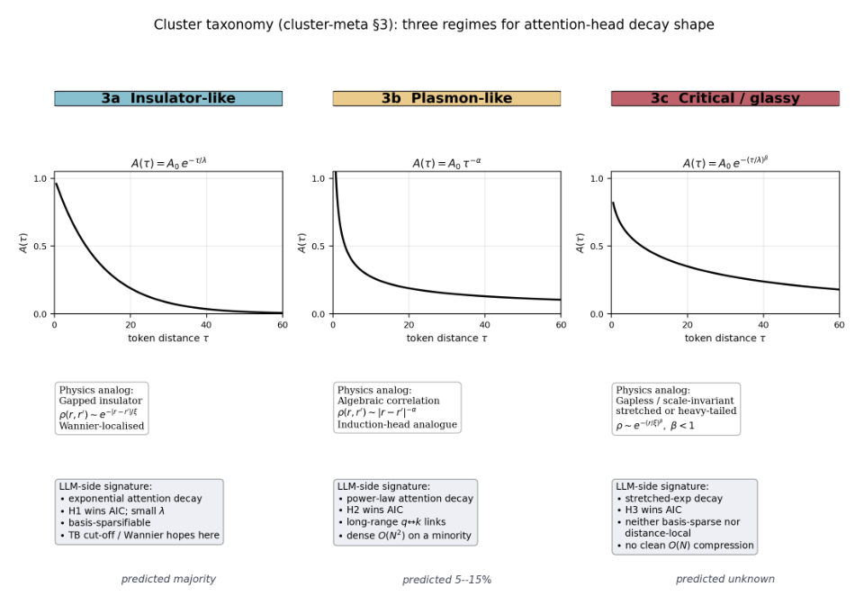
<figcaption class="paper-figure-caption"><b>Fig 2.</b> Figure 2: Cluster-meta §3 taxonomy of three attention-distance decay regimes for a (layer, head) pair. Each panel gives the canonical decay function (top), physical analog (middle), operational LLM signature and P002 AIC-winner correspondence (bottom), and predicted relative fraction. The cluster-level prediction makes 3a (insulator-like) the majority regime; Section 4 shows the measured inversion.</figcaption>
</figure>
<figure class="paper-figure-card">
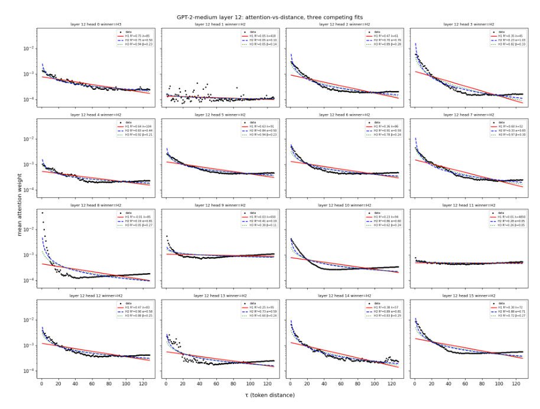
<figcaption class="paper-figure-caption"><b>Fig 3.</b> Figure 3: P002 attention-versus-distance histograms at the median layer (L = 12 of 24) of GPT-2- medium. The 4×4 grid contains all 16 heads, with the three fits overlaid in each panel: H1 exponen- tial (red), H2 power law (blue), and H3 stretched exponential (green). Across the 16 heads, H1 under- shoots at short distances and overshoots in the tail; H2 follows the data across the full 1 ≤τ ≤128 window, and H3 nearly coincides with H2. AIC selects H2 in 15 of the 16 heads at this layer. Source: projects/P002 tightbinding attention/pilot/figure decay layer12.png.</figcaption>
</figure>
<figure class="paper-figure-card">
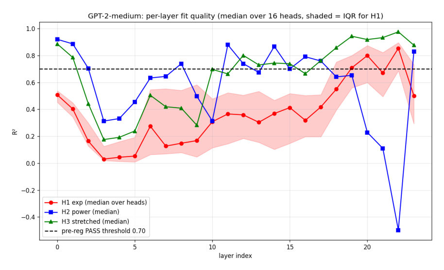
<figcaption class="paper-figure-caption"><b>Fig 4.</b> Figure 4: P002 per-layer fit quality R2 for H1 (exponential, red), H2 (power law, blue), and H3 (stretched, green) on GPT-2-medium. H2 and H3 dominate H1 at every depth except the final layer, where all three collapse. Source: projects/P002 tightbinding attention/pilot/figure fit quality per layer.png.</figcaption>
</figure>
<figure class="paper-figure-card">
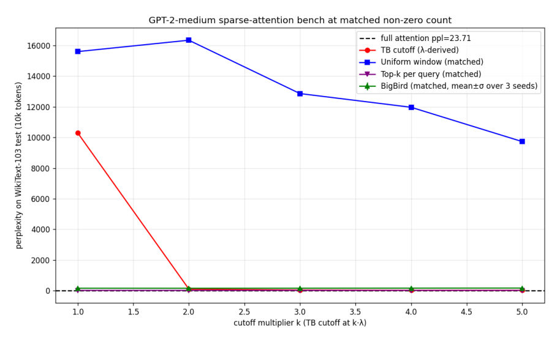
<figcaption class="paper-figure-caption"><b>Fig 5.</b> Figure 5: P002 perplexity versus TB cutoff multiplier k (cutoff radius = k · λ), compared with full at- tention and matched uniform-window, BigBird, and top-k controls. TB falls sharply from a catastrophic value at k = 1 but does not reach full attention by k = 5, where it remains approximately +15% above the full-attention baseline and well above the pre-registered 5% shelve threshold. For each k, matched top-k (purple) tracks full attention; the matched uniform window is catastrophic at all k; and BigBird stays near ∼160 ppl. The headline “TB at 3λ costs +96% perplexity” is the k = 3 point. Source: projects/P002 tightbinding attention/pilot/figure cutoff vs baselines.png.</figcaption>
</figure>
</div>

<p><strong>Summary.</strong> This work rigorously tests whether solid-state physics principles can predict the structure of LLMs by applying five physics-inspired compression mappings. The authors found that the expected 'insulator-like' behavior in attention heads is false, suggesting the underlying dynamics are more complex, possibly critical or glassy. The paper's main contribution is establishing a new, highly disciplined methodology for such physics-informed AI research.</p>
<p><strong>Why it may be interesting.</strong> It directly bridges the language of condensed matter theory (e.g., localization, RG flow) with the empirical analysis of deep learning architectures, providing a quantitative testbed for physical intuition in AI.</p>
<details>
<summary>Detailed structure</summary>
<p><strong>Main problem.</strong> The paper investigates whether solid-state physics concepts, such as area-law decay or specific compression mappings, can explain the inherent redundancy and structure within the weight matrices and attention mechanisms of large language models (LLMs).</p>
<p><strong>Main result.</strong> The pre-registered hypothesis that attention heads behave like 'insulator-like' systems (exhibiting strong locality) is empirically falsified at the small-LM scale, suggesting instead critical or glassy regimes.</p>
<p><strong>Method.</strong> The authors employed a rigorous, pre-registered protocol involving testing five physics-inspired compression mappings (e.g., Wannier, tight-binding, tensor-train) against LLMs using a strict 3-sigma statistical gate.</p>
<p><strong>Model / system.</strong> The study analyzes pretrained language models (LLMs) like Pythia-160M and GPT-2-medium, treating their internal representations (attention heads, weights) as complex systems analogous to condensed matter Hamiltonians.</p>
<p><strong>Key observables.</strong> Perplexity change, Wannier sparsity ($ ext{s}\star$), Pearson correlation ($r$) between bond dimension and surprisal, and attention decay rates.</p>
<p><strong>Important parameters / regimes.</strong> The results are specific to the $\le 350$M parameter scale tested, while the rank-face findings held up to 7–8B parameters.</p>
<p><strong>Assumptions / limitations.</strong> The analysis relies on the assumption that the physical analogies (e.g., area-law decay) provide a meaningful structural constraint on the LLM capacity, and the methodology is built on pre-registration to avoid p-hacking.</p>
<p><strong>Figures summary.</strong> The notes do not detail figure contents, but mention a block diagram illustrating the cluster-meta discipline workflow (Pre-registration $
ightarrow$ Pilot $
ightarrow$ Catalogue $
ightarrow$ Novelty Check).</p>
<p><strong>Paper structure.</strong> The paper is structured around a rigorous methodological contribution: defining a pre-registration, 3-sigma gate, and cluster-framing discipline. It then systematically tests five physics-inspired mappings across three phases, culminating in the falsification of the initial hypothesis.</p>
</details>
<details>
<summary>Abstract</summary>
<p>We report a three-month autonomous research-agent program testing five solid-state-physics-inspired compression mappings on pretrained language models, with predictions committed to git before any pilot data and a 3-sigma gate deciding PASS or SHELVE. The common anchor -- area-law / Kohn-nearsighted decay of the one-particle density matrix -- has a distance face (P001 Wannier, P002 tight-binding) and a rank face (P003 DMRG-truncated MLPs, P005 Wilson-RG, P011 tensor-train embeddings). P005 was pre-empted at Phase 1; three of four Phase-3 pilots were falsified. On the attention face, GPT-2-medium attention-versus-distance is best fit by a stretched exponential in 12 of 16 median-layer heads once probe padding is excluded, and a tight-binding cutoff costs +96% perplexity (P002); on Pythia-160M the Wannier sparsity 0.054 +/- 0.004 is indistinguishable from PCA, random-Haar and identity baselines (P001). On the rank face, per-token tensor-train bond dimension does not track surprisal (r = 0.016 vs a pre-registered 0.65) and the format inflates rather than compresses (P011). P003 is mixed: its scaling claim shelved (r = -0.434), its MPO premise died at stage-0, and its cross-paper check, r = 0.523 as first written, collapses to 0.047 under the same correction, leaving both cross-paper checks null. The results invert the pre-registered prediction that most attention heads behave like Kohn-nearsighted insulators, pointing instead to critical, glassy or heavy-tailed regimes; the inversion is specific to the &lt;= 350M scale tested, while the rank-face no-gain result held to 7-8B. We contribute the pre-registration + 3-sigma + cluster-framing + append-only-catalogue discipline -- including why our own enforcement gate was designed but not deployed -- four pre-registered negative results with full data release, and the inversion. The catalogue holds eighteen concluded studies, seventeen negative.</p>
</details>
<p><sub><a href="#top">↑ back to top</a></sub></p>

<p><a id="paper-2609.35159"></a></p>
<h3 id="weakly-interacting-fermionic-gibbs-states-are-gaussian-mixtures-and-classically-simulable"><a href="http://arxiv.org/abs/2609.35159v1">Weakly interacting fermionic Gibbs states are Gaussian mixtures and classically simulable</a></h3>
<p><strong>Authors:</strong> Zhengyi Han, Yuanchen Zhao, Zi-Wen Liu<br>
<strong>Type:</strong> theory · <strong>Category:</strong> numerical methods · <strong>PDF:</strong> <a href="https://arxiv.org/pdf/2609.35159v1">https://arxiv.org/pdf/2609.35159v1</a><br>
<strong>Analysis basis:</strong> full PDF text, analyzed in chunks
<strong>Topic relevance:</strong> <code>analog quantum simulation</code> <strong>3/5</strong> · <code>methods for driven-dissipative</code> <strong>2/5</strong> · <code>Full counting statistics</code> <strong>1/5</strong> · <code>quantum measurements</code> <strong>1/5</strong></p>
<div class="figure-strip-hint">↔ Scroll figures horizontally</div>
<div class="paper-figures-scroll">
<figure class="paper-figure-card">

<figcaption class="paper-figure-caption"><b>Fig 1.</b> Low-resolution page preview, page 2</figcaption>
</figure>
<figure class="paper-figure-card">

<figcaption class="paper-figure-caption"><b>Fig 2.</b> Low-resolution page preview, page 3</figcaption>
</figure>
<figure class="paper-figure-card">

<figcaption class="paper-figure-caption"><b>Fig 3.</b> Low-resolution page preview, page 4</figcaption>
</figure>
<figure class="paper-figure-card">

<figcaption class="paper-figure-caption"><b>Fig 4.</b> Low-resolution page preview, page 5</figcaption>
</figure>
<figure class="paper-figure-card">

<figcaption class="paper-figure-caption"><b>Fig 5.</b> Low-resolution page preview, page 6</figcaption>
</figure>
</div>

<p><strong>Summary.</strong> This paper proves that for weakly interacting fermionic systems, the quantum Gibbs state can be represented as a convex mixture of Gaussian states. This mathematical structure allows the authors to construct an efficient, polynomial-time classical sampling algorithm for the state and to calculate key physical observables like entanglement entropy and correlation functions. It establishes a clear pathway for simulating quantum many-body physics when interactions are sufficiently weak.</p>
<p><strong>Why it may be interesting.</strong> This work provides concrete, algorithmic criteria (weak coupling) under which complex quantum dynamics can be mapped onto classical computational problems, which is vital for simulating quantum materials in the NISQ era.</p>
<details>
<summary>Detailed structure</summary>
<p><strong>Main problem.</strong> The paper addresses the fundamental challenge of determining which interacting fermionic quantum many-body systems allow for efficient classical simulation.</p>
<p><strong>Main result.</strong> They rigorously prove that for weakly interacting fermions, the Gibbs state is a convex mixture of Gaussian states, enabling the construction of a polynomial-time classical sampler for the state and its observables.</p>
<p><strong>Method.</strong> The core method involves decomposing the Gibbs state into a convex mixture of Gaussian states and then constructing a Metropolis sampler on a structured tree derived from this decomposition.</p>
<p><strong>Model / system.</strong> The system is a fermionic lattice described by a local interacting Hamiltonian $H = H_0 + V$, where $H_0$ is quadratic and $V$ is a weak, local interaction term. The analysis focuses on the Gibbs state $
ho_eta = e^{-eta H} /     ext{Tr}(e^{-eta H})$.</p>
<p><strong>Key observables.</strong> Expectation values $   ext{Tr}(O
ho_eta)$, full counting statistics, fermion parity, subsystem reduced states $
ho_{eta,A}$, and Von Neumann entropy $S(
ho_{eta,A})$.</p>
<p><strong>Important parameters / regimes.</strong> The results are contingent on the interaction strength $g$ being below a positive threshold ($g \le g_{	ext{mix}}$ or $g \le g_{	ext{samp}}$).</p>
<p><strong>Assumptions / limitations.</strong> The interactions must be geometrically local (finite range), and the analysis relies on the state being sufficiently close to Gaussian (weak interaction regime).</p>
<p><strong>Paper structure.</strong> The paper establishes the convex-Gaussianity of the Gibbs state in the weak interaction limit, followed by the construction of a polynomial-time classical sampler using Metropolis updates on a sampling tree. Finally, it demonstrates the classical accessibility of key observables like entropy and correlation functions.</p>
</details>
<details>
<summary>Abstract</summary>
<p>Identifying regimes in which interacting fermionic systems admit efficient classical simulation is a crucial task in quantum many-body physics. In this work, we rigorously establish the Gaussianity and classical simulability of sufficiently weakly interacting fermions. For the Gibbs state of a local interacting fermionic Hamiltonian $H=H_0+V$ at any finite temperature and in any spatial dimension, where $H_0$ is quadratic and $V$ is the interaction term, we show that there exists a positive interaction strength below which the Gibbs state is a convex mixture of fermionic Gaussian states. Moreover, based on this structure, we construct a polynomial-time classical sampler for the Gibbs state via Metropolis updates on a tree whose leaves are Gaussian states.</p>
</details>
<p><sub><a href="#top">↑ back to top</a></sub></p>

<p><a id="paper-2609.32951"></a></p>
<h3 id="domain-growth-in-lipid-membranes-and-the-budding-instability"><a href="http://arxiv.org/abs/2609.32951v1">Domain growth in lipid membranes and the budding instability</a></h3>
<p><strong>Authors:</strong> Jean Wolff, Fabrice Thalmann, Carlos Marques, David Andelman, Haim Diamant, Shigeyuki Komura<br>
<strong>Type:</strong> theory · <strong>Category:</strong> statistical mechanics · <strong>PDF:</strong> <a href="https://arxiv.org/pdf/2609.32951v1">https://arxiv.org/pdf/2609.32951v1</a><br>
<strong>Analysis basis:</strong> full PDF text, analyzed in chunks
<strong>Topic relevance:</strong> <code>non-equilibrium universality</code> <strong>3/5</strong> · <code>Keldysh / 2PI / non-Gaussian methods</code> <strong>1/5</strong> · <code>driven-dissipative phase transition</code> <strong>1/5</strong> · <code>methods for driven-dissipative</code> <strong>1/5</strong></p>
<div class="figure-strip-hint">↔ Scroll figures horizontally</div>
<div class="paper-figures-scroll">
<figure class="paper-figure-card">

<figcaption class="paper-figure-caption"><b>Fig 1.</b> FIG. 1. (a) Schematic illustration of a planar or dimpled do- main (red) that buds from an otherwise planar two-dimensional (2D) membrane (predominantly yellow). (b) Schematic represen- tation of the model. The inner domain with the stable-phase com- position 𝜙s (red) grows into the surrounding background with initial composition 𝜙b (yellow). The time-dependent radius of the growing inner domain is denoted by 𝐷(𝑡), while 𝑅is the outer radius of the membrane. The boundary of the growing inner domain, located at 𝑟= 𝐷(𝑡), is characterized by the line tension 𝜎(𝑡).</figcaption>
</figure>
<figure class="paper-figure-card">

<figcaption class="paper-figure-caption"><b>Fig 2.</b> FIG. 2. The dimensionless free-energy density 𝑉(𝜙)/𝑎is plotted as a function of the composition 𝜙[see Eq. (2)]. Here, the parame- ter value is 𝑎/𝑏= 2. The blue dots indicate the two stable phases, 𝜙= ±𝜙s = ± √︁</figcaption>
</figure>
<figure class="paper-figure-card">

<figcaption class="paper-figure-caption"><b>Fig 3.</b> FIG. 3. Time evolution of the composition profile 𝜙(𝑟, 𝑡) as a function of 𝑟/𝜉. The chosen parameters are 𝑎/𝑏= 𝜙2 s = 2, 𝜙b = −1, and 𝑅/𝜉= 100. The boundary conditions are 𝜙(0, 𝑡) = 𝜙s and 𝑗𝑟(0, 𝑡) = 0 at 𝑟= 0 [see Eq. (7)], and 𝜕𝑟𝜙(𝑅, 𝑡) = 0 and 𝑗𝑟(𝑅, 𝑡) = 0 at 𝑟= 𝑅 [see Eq. (8)]. The inflection point of the profile, indicated by the red dot, defines the domain radius 𝐷(𝑡), which increases with time.</figcaption>
</figure>
<figure class="paper-figure-card">

<figcaption class="paper-figure-caption"><b>Fig 4.</b> FIG. 4. (a) The dimensionless domain radius 𝐷(𝑡)/𝜉as a func- tion of the rescaled time 𝑡/𝜏at intermediate times, shown on a log- log scale. The parameters are 𝑎/𝑏= 𝜙2 s = 2 and 𝑅/𝜉= 100. The dotted lines indicate power-law behavior with exponents 1/3 and 1/2 (see the text for details). The onset of the plateau asso- ciated with 𝐷sat becomes apparent at approximately 𝑡/𝜏= 6,000. (b) The dimensionless line tension ˜𝜎(𝑡) = 𝜎(𝑡)𝜉/𝑐as a function of the rescaled time 𝑡/𝜏at intermediate times. At later times, the line tension approaches the saturation value ˜𝜎sat ≈1.88, in close agreement with the equilibrium planar-interface value ˜𝜎0 = 1.89.</figcaption>
</figure>
<figure class="paper-figure-card">

<figcaption class="paper-figure-caption"><b>Fig 5.</b> FIG. 5. (a) The dimensionless budding function 𝑔(𝑡) defined in Eq. (20), together with the threshold value 𝑔= 1. Their intersection determines the budding-instability time 𝑡bud/𝜏. The parameters are 𝑎/𝑏= 𝜙2 s = 2, 𝐶0𝜉= 0.01, and 𝜅/𝑐= 4, and we obtain 𝑡bud/𝜏≈ 400. The estimated budding-instability time lies within the growth regime characterized by 𝐷∼𝑡1/3. (b) The rescaled buddingtime 𝑡bud/𝜏as a function of the dimensionless spontaneous curvature 𝐶0𝜉for 𝑎/𝑏= 𝜙2 s = 1.5, 2, and 2.5, over the range 0 ≤𝐶0𝜉≤0.1.</figcaption>
</figure>
</div>

<p><strong>Summary.</strong> This work models domain growth in phase-separating lipid membranes using a conserved Ginzburg-Landau approach. It tracks the crossover in domain growth dynamics ($D \sim t^{1/3}$ to $D \sim t^{1/2}$) and shows that the onset of membrane budding instability depends crucially on the coupled, time-varying evolution of both domain size and line tension.</p>
<p><strong>Why it may be interesting.</strong> The study of non-equilibrium domain growth and instability thresholds is a core topic in soft matter physics, providing quantitative models for phase separation dynamics relevant to biological membranes.</p>
<details>
<summary>Detailed structure</summary>
<p><strong>Main problem.</strong> The paper investigates the non-equilibrium dynamics of domain growth in phase-separating lipid membranes and how this evolution dictates the onset time of the budding instability.</p>
<p><strong>Main result.</strong> The budding instability time depends critically on the coupled, time-dependent evolution of both the domain size ($D(t)$) and the line tension ($\sigma(t)$), showing distinct growth regimes ($D \sim t^{1/3}$ to $D \sim t^{1/2}$).</p>
<p><strong>Method.</strong> The analysis uses numerical solutions of a conserved, time-dependent Ginzburg-Landau model under radial symmetry, combined with a quasistatic criterion for stability loss.</p>
<p><strong>Model / system.</strong> The system is a fluid lipid bilayer undergoing liquid-liquid phase separation, modeled by a conserved order parameter $\phi$ governed by a fourth-order PDE. The dynamics are studied in the context of domain growth and subsequent membrane budding.</p>
<p><strong>Key observables.</strong> Domain size $D(t)$, time-dependent line tension $\sigma(t)$, and the budding function $g(t)$.</p>
<p><strong>Important parameters / regimes.</strong> Spontaneous curvature ($C_0$), critical point parameters ($a/b$), and characteristic time scales ($ au$).</p>
<p><strong>Assumptions / limitations.</strong> The analysis assumes radial symmetry and uses a quasistatic approximation to link domain growth to the instability criterion, neglecting feedback from curvature on the pre-budding evolution.</p>
<p><strong>Figures summary.</strong> Figures illustrate the crossover in domain growth exponents ($t^{1/3}$ to $t^{1/2}$), the time evolution of the concentration profile $\phi(r, t)$, and the dependence of the budding time on spontaneous curvature.</p>
<p><strong>Paper structure.</strong> The paper first establishes the governing dynamics using a conserved Ginzburg-Landau model, then analyzes the time evolution of $D(t)$ and $\sigma(t)$ through distinct growth regimes, and finally applies these time-dependent quantities to the quasistatic criterion to predict the budding instability time.</p>
</details>
<details>
<summary>Abstract</summary>
<p>We investigate the growth of a circular domain in a phase-separating lipid membrane and its relation to the budding instability. We describe the in-plane dynamics with a conserved, time-dependent Ginzburg-Landau model under radial symmetry. Numerical solutions show a crossover of the domain size $D$ as a function of time $t$ from $D\sim t^{1/3}$ at early times to $D\sim t^{1/2}$ at later times, followed by saturation due to finite system size. The time-dependent line tension $σ(t)$, evaluated from the evolving concentration profile, rises rapidly before approaching the planar-interface value. This behavior distinguishes an early line-tension-dominated regime from a later domain-size-dominated regime. To estimate the budding instability, we combine $D(t)$ and $σ(t)$ with a quasistatic criterion for the loss of stability of a partially budded domain. The budding-instability time decreases with increasing membrane spontaneous curvature and increases near the critical point. Thus, the evolution of both domain size and line tension is essential for determining the time required for the budding instability.</p>
</details>
<p><sub><a href="#top">↑ back to top</a></sub></p>

<p><a id="paper-2609.35484"></a></p>
<h3 id="improving-the-stability-of-the-hierarchical-equations-of-motion-for-open-quantum-systems-with-strong-coupling-to-structured-bosonic-baths"><a href="http://arxiv.org/abs/2609.35484v1">Improving the Stability of the Hierarchical Equations of Motion for Open Quantum Systems with Strong Coupling to Structured Bosonic Baths</a></h3>
<p><strong>Authors:</strong> Salvatore Gatto, Samuel L. Rudge, Bokang Hou, Eran Rabani, Michael Thoss<br>
<strong>Type:</strong> theory · <strong>Category:</strong> other · <strong>PDF:</strong> <a href="https://arxiv.org/pdf/2609.35484v1">https://arxiv.org/pdf/2609.35484v1</a><br>
<strong>Analysis basis:</strong> full PDF text, analyzed in chunks
<strong>Topic relevance:</strong> <code>methods for driven-dissipative</code> <strong>3/5</strong> · <code>Keldysh / 2PI / non-Gaussian methods</code> <strong>1/5</strong> · <code>correlated / nonlocal dissipation</code> <strong>1/5</strong> · <code>driven-dissipative phase transition</code> <strong>1/5</strong></p>
<div class="figure-strip-hint">↔ Scroll figures horizontally</div>
<div class="paper-figures-scroll">
<figure class="paper-figure-card">

<figcaption class="paper-figure-caption"><b>Fig 1.</b> FIG. 1. Brownian (red) and structured (blue) spectral den- sity functions used in this work. Parameters of the Brownian oscillator are γ = 4.9 meV and Ω= 13.89 meV, and the reor- ganization energy of both has been set to Λ = 50 meV.</figcaption>
</figure>
<figure class="paper-figure-card">

<figcaption class="paper-figure-caption"><b>Fig 2.</b> FIG. 2. Time-dependent Euclidean norm of the propagator corresponding to the minimal generator, GN(t) = ∥etLN ∥2, and to the transformed generator, ˜GN(t) = ∥et˜LN ∥2. Param- eters: N = 50, γ = 10−4, and η = 2 × 10−4 · (1 + i).</figcaption>
</figure>
<figure class="paper-figure-card">

<figcaption class="paper-figure-caption"><b>Fig 3.</b> FIG. 3. Population of the initially occupied state, P1(t) = ρS,11(t), as a function of time for the Brownian oscillator spec- tral density and various reorganization energies, Λ. Param- eters are: γ = 4.9 meV, Ω= 13.89 meV, kBT = 25.85 meV, ε = 0, and ∆= 10 meV. The truncation tier is chosen such that the stabilized HEOM is converged, which changes for varying reorganization strength: the largest value is nmax = 14 for Λ = 60 meV.</figcaption>
</figure>
<figure class="paper-figure-card">

<figcaption class="paper-figure-caption"><b>Fig 4.</b> FIG. 4. Population of the initially occupied state, P1(t) = ρS,11(t), as a function of time for the Brownian oscillator spec- tral density and various truncation tiers, nmax. The reorga- nization energy is Λ = 60 meV, and all other parameters are the same as in Fig. 3.</figcaption>
</figure>
<figure class="paper-figure-card">

<figcaption class="paper-figure-caption"><b>Fig 5.</b> FIG. 5. Population dynamics of the initially occupied state, P1(t) = ρS,11(t), for the structured spectral density shown in Fig. 1 and for various reorganization energies, Λ. Truncation tier is nmax = 8 for all reorganization energies. All other parameters are the same as in Fig. 3.</figcaption>
</figure>
</div>

<p><strong>Summary.</strong> This paper improves the numerical stability of the Hierarchical Equations of Motion (HEOM) method for open quantum systems. The authors identify that finite truncation leads to instabilities, especially with structured baths. They propose and demonstrate a non-unitary similarity transformation that mathematically balances the problematic terms, enabling simulations of much stronger system-bath couplings.</p>
<p><strong>Why it may be interesting.</strong> This work directly tackles a major computational bottleneck in simulating open quantum dynamics, providing a robust mathematical tool for studying strongly coupled quantum systems relevant to quantum optics and condensed matter physics.</p>
<details>
<summary>Detailed structure</summary>
<p><strong>Main problem.</strong> The paper addresses fundamental numerical instabilities encountered when using the Hierarchical Equations of Motion (HEOM) approach to simulate open quantum systems coupled to structured bosonic baths.</p>
<p><strong>Main result.</strong> The authors introduce a non-unitary similarity transformation that balances problematic hierarchy-raising terms, allowing for stable simulations with much larger system-bath coupling strengths than previously possible.</p>
<p><strong>Method.</strong> The core method involves analyzing the HEOM generator in an auxiliary Fock-space picture and applying a specific non-unitary similarity transformation to stabilize the evolution equations.</p>
<p><strong>Model / system.</strong> The study uses the spin-boson model ($  ext{HS} = \varepsilon\sigma_z + \Delta\sigma_x$) coupled to a bosonic bath ($   ext{HB}$), characterized by a spectral density $J(\omega)$. The analysis is general for open systems with Gaussian environmental coupling.</p>
<p><strong>Key observables.</strong> The stability of the HEOM evolution, the two-time bath-correlation function $C(t)$, and the ability to simulate large system-bath coupling strengths.</p>
<p><strong>Important parameters / regimes.</strong> System-bath coupling strength ($\lambda$), bath spectral density $J(\omega)$ (e.g., Brownian oscillator or structured density), and the truncation depth of the HEOM hierarchy.</p>
<p><strong>Assumptions / limitations.</strong> The theory assumes the environmental influence is Gaussian and the system-bath coupling is linear in the bath operators; the method itself is an extension to overcome numerical limitations of the HEOM truncation.</p>
<p><strong>Figures summary.</strong> Not specified (The notes detail mathematical derivations and conceptual improvements rather than describing specific figure contents).</p>
<p><strong>Paper structure.</strong> The paper progresses by establishing the model (spin-boson system), reviewing the HEOM framework, and finally detailing the application of the non-unitary similarity transformation to demonstrate the stabilization of the equations.</p>
</details>
<details>
<summary>Abstract</summary>
<p>The hierarchical equations of motion (HEOM) approach is one of the most powerful methods avail- able to simulate the dynamics of open quantum systems. Although the HEOM approach has been shown to be stable and efficient in many parameter regimes and physical scenarios, it is also well known that the unavoidable finite truncation of the hierarchy can lead to fundamental numeri- cal instabilities for bosonic environments. In this work, we apply recently developed techniques to analyze these issues. We use an auxiliary Fock-space picture of the hierarchy to first identify the unbalanced hierarchy-raising terms responsible for the strong transient amplification associated with the non-normal algebraic structure of the HEOM generator. We then apply a non-unitary similarity transformation that converts these terms into balanced combinations of hierarchy-raising and hierarchy-lowering terms, thereby suppressing their numerical impact. We first demonstrate the efficacy of this approach via a spin-boson model with a simple Brownian oscillator spectral den- sity and subsequently extend the analysis to a structured spectral density, showing for both cases that the transformed HEOM approach allows simulations of much larger system-bath coupling than would otherwise be possible.</p>
</details>
<p><sub><a href="#top">↑ back to top</a></sub></p>

<p><a id="paper-2609.35754"></a></p>
<h3 id="perfect-born-sampling-of-symmetric-thermal-tensor-network-for-quantum-lattice-models"><a href="http://arxiv.org/abs/2609.35754v1">Perfect Born Sampling of Symmetric Thermal Tensor Network for Quantum Lattice Models</a></h3>
<p><strong>Authors:</strong> Jianxin Gao, Qiaoyi Li, Yuan Gao, Chuanshu Xu, Guoliang Wu, Su Yi, Bin-Bin Chen, Wei Li<br>
<strong>Type:</strong> theory · <strong>Category:</strong> strongly correlated electrons · <strong>PDF:</strong> <a href="https://arxiv.org/pdf/2609.35754v1">https://arxiv.org/pdf/2609.35754v1</a><br>
<strong>Analysis basis:</strong> full PDF text, analyzed in chunks
<strong>Topic relevance:</strong> <code>analog quantum simulation</code> <strong>3/5</strong> · <code>methods for driven-dissipative</code> <strong>3/5</strong></p>
<div class="figure-strip-hint">↔ Scroll figures horizontally</div>
<div class="paper-figures-scroll">
<figure class="paper-figure-card">

<figcaption class="paper-figure-caption"><b>Fig 1.</b> FIG. 1. Diagrammatic representation of stoMPS method. (a) A normalized Born sample |ψα⟩is obtained by projecting the auxiliary indices of the purified supervector |Ψ(β)⟩⟩(orange tensors) onto a product configuration α = (α1, . . . , αN) [cf. Eq. (2)]. A sampled MPS is written as |ψ⟩= P q1,...,qN  A[1] q1 A[2] q2 . . . A[N] qN  |q1, q2, . . . , qN⟩, where qi denotes the local physical state at site i, and A[i] qi is a matrix whose successive product yields the coefficient. Each tensor A[i] is shown as a blue solid node, with physical index qi (vertical) and virtual indices (horizontal) connecting adjacent sites. (b) The unbiasedness condition in Eq. (3): contracting the auxiliary indices...</figcaption>
</figure>
<figure class="paper-figure-card">

<figcaption class="paper-figure-caption"><b>Fig 2.</b> FIG. 2. Finite-temperature energy benchmarks of stoMPS on Hubbard cylinders up to width W = 10. (a) Energy per site ϵ on CL 4×8 cylinder, obtained with Ns = 400 Born samples taken at T0 = 4, 2, and 1. The gray line shows the tanTRG results, the red crosses show DQMC data, and the horizontal dashed line marks DMRG ground-state energy. Inset shows three stoMPS estimates at T = 1/4, with tanTRG (gray) and DQMC data (red) shown for comparison, where the relative deviations from DQMC are all below 3.4 × 10−4, compared with 5.1 × 10−4 for tanTRG. (b) Unweighted sample-energy distributions ˜f(ϵ) for the 4 × 8 calculations, with the Born samples taken at T0 and the distributions measured at T....</figcaption>
</figure>
<figure class="paper-figure-card">

<figcaption class="paper-figure-caption"><b>Fig 3.</b> FIG. 3. Chiral response of the half-filled triangular-lattice Hubbard model. (a) Local chirality ⟨Oijk⟩induced by a pinning field (hc = 0.1) applied to the central triangle (red cross) on a YC 4 × 12 cylinder at low temperature (T = 1/64). Results are shown for U = 10 (CSL phase) and U = 14 (120◦AFM phase). (b) Temperature depen- dence of the chiral susceptibility χc, where the effective exchange interaction Jeff ≡4t2/U. The stoMPS results at U = 10 (light- and dark-orange lines) are benchmarked against tanTRG calculations with D∗≃3000 (gray line) and 6000 (black line). The inset shows 1/χc versus T/Jeff. A linear fit over the range 0.06 ≤T/Jeff ≤0.125 yields an extrapolated characteristic...</figcaption>
</figure>
<figure class="paper-figure-card">

<figcaption class="paper-figure-caption"><b>Fig 4.</b> FIG. 4. Kinetic ferromagnetism in the electron-doped triangular- lattice Hubbard model. (a) Cdss calculated on a finite cluster with U = 12, T = 1/16, and electron doping δ = 0.16. The data are symmetrized according to the C6 rotational symmetry. Red (blue) in- dicates FM (AFM) correlations. (b) Bulk-averaged nearest-neighbor spin correlation Ctot ss versus doping δ. The stoMPS results are ob- tained on a YC 4 × 12 cylinder at U = 12, T = 0.4, compared to experimental data from Ref. [79] [U = 9.9(3), T = 0.62(4)]. (c) Temperature evolution of Ctot ss at fixed total particle numbers Ne = 48, 56, 64, and 68. The average bulk doping levels δ are indicated in the legend. The lower right corner...</figcaption>
</figure>
<figure class="paper-figure-card">

<figcaption class="paper-figure-caption"><b>Fig 5.</b> FIG. 5. Finite-temperature optical conductivity. (a) Schematic of the setup for the 1D Hubbard chain (L = 64, U = 8). Real part of the op- tical conductivity Re σ(ω)/L for (b) the half-filled (Ne = 64) and (c) 1/8-hole-doped (Ne = 56) chain at representative temperatures. The inset of (c) shows the temperature evolution of the estimated Drude weight D(ωc = 3)/L for δ = 1/8 and δ = 0, with the thermodynamic- limit Bethe-ansatz value at T = 0 also indicated. All dynamical simulations are performed with bond dimension D = 1024 and max- imum evolution time tmax = 10. Finite-temperature results are aver- aged over Ns = 500 Born samples taken at T0 = 2. During cool- ing, the annealed resampling...</figcaption>
</figure>
</div>

<p><strong>Summary.</strong> This paper introduces a novel perfect Born sampling technique for thermal tensor networks, designed to overcome the trade-off between sampling efficiency and symmetry enforcement in quantum simulations. By implementing this method using stoMPS and stoPEPS, the authors accurately simulate complex models like the Hubbard model at ultralow temperatures, revealing key magnetic and electronic phases.</p>
<p><strong>Why it may be interesting.</strong> The combination of advanced tensor network techniques (MPS/PEPS) with rigorous sampling methods (Born rule) to handle symmetries and low temperatures makes it a powerful tool for simulating complex quantum dynamics relevant to strongly correlated materials.</p>
<details>
<summary>Detailed structure</summary>
<p><strong>Main problem.</strong> Accurately calculating quantum lattice models at low temperatures remains a major challenge in many-body physics.</p>
<p><strong>Main result.</strong> The proposed method successfully combines high sampling efficiency with full symmetry acceleration, allowing for state-of-the-art study of both equilibrium and dynamical properties down to ultralow temperatures.</p>
<p><strong>Method.</strong> The authors propose a perfect Born sampling approach for thermal tensor networks, which performs importance sampling directly from the purified density matrix while incorporating Abelian and non-Abelian symmetries by sampling symmetry quantum numbers.</p>
<p><strong>Model / system.</strong> The method is benchmarked on quantum lattice models, including the Hubbard model (on square and triangular lattices) and the quantum Ising model. It is implemented using stochastic matrix product states (stoMPS) and stochastic projected entangled pair states (stoPEPS).</p>
<p><strong>Key observables.</strong> Energy per site, thermal expectation values of observables (e.g., optical conductivity), and detection of magnetic orders like scalar chiral order and kinetic ferromagnetism.</p>
<p><strong>Important parameters / regimes.</strong> Low temperatures ($T/t$ down to $1/64$), system widths up to $W=10$, and quantum critical points.</p>
<p><strong>Assumptions / limitations.</strong> Existing stochastic schemes face a fundamental dilemma where sampling efficiency and symmetry acceleration cannot be achieved simultaneously.</p>
<p><strong>Figures summary.</strong> Figure 1 diagrammatically illustrates the stoMPS method, showing Born sampling via projection of the purified supervector. Other figures compare energy per site estimates from the method against established benchmarks like DQMC.</p>
<p><strong>Paper structure.</strong> The paper introduces the core concept of perfect Born sampling for thermal tensor networks, details its implementation via stoMPS and stoPEPS, and then presents benchmarks on the Hubbard and Ising models to validate its accuracy and efficiency for both equilibrium and dynamic properties.</p>
</details>
<details>
<summary>Abstract</summary>
<p>Accurate calculations of quantum lattice models at low temperatures constitute a major challenge in many-body physics. Stochastic sampling of tensor-network states offers a promising route to tackle this problem; however, existing schemes have long faced a fundamental dilemma---sampling efficiency and symmetry acceleration \textit{cannot} be achieved simultaneously. Here we propose a perfect Born sampling approach for thermal tensor networks, which performs importance sampling directly from the purified density matrix via the Born rule and incorporates Abelian and non-Abelian symmetries by sampling symmetry quantum numbers. We benchmark the method, realized as both stochastic matrix product states (stoMPS) and stochastic projected entangled pair states (stoPEPS), on large-scale quantum lattice models. Using stoMPS, we accurately simulate the square-lattice Hubbard model on cylinders up to width $W=10$, and study the triangular-lattice Hubbard model down to $T/t = 1/64$, revealing scalar chiral order at half filling and kinetic ferromagnetism upon electron doping. We further extend the stoMPS method to compute finite-temperature quantum dynamics, as demonstrated by the optical conductivity of the Hubbard model, and generalize it to stoPEPS, as showcased on the $20\times20$ square-lattice quantum Ising model at its quantum critical point. Our method combines high sampling efficiency with full symmetry acceleration, and can be used as a state-of-the-art framework for studying both equilibrium and dynamical properties down to ultralow temperatures.</p>
</details>
<p><sub><a href="#top">↑ back to top</a></sub></p>

<p><a id="paper-2609.34352"></a></p>
<h3 id="second-largest-eigenvalue-does-not-bound-stationary-entropy-production"><a href="http://arxiv.org/abs/2609.34352v1">Second largest eigenvalue does not bound stationary entropy production</a></h3>
<p><strong>Authors:</strong> Naoto Shiraishi<br>
<strong>Type:</strong> theory · <strong>Category:</strong> statistical mechanics · <strong>PDF:</strong> <a href="https://arxiv.org/pdf/2609.34352v1">https://arxiv.org/pdf/2609.34352v1</a><br>
<strong>Analysis basis:</strong> full PDF text, analyzed in chunks
<strong>Topic relevance:</strong> <code>non-equilibrium universality</code> <strong>3/5</strong> · <code>correlated / nonlocal dissipation</code> <strong>1/5</strong> · <code>driven-dissipative phase transition</code> <strong>1/5</strong> · <code>methods for driven-dissipative</code> <strong>1/5</strong></p>
<div class="figure-strip-hint">↔ Scroll figures horizontally</div>
<div class="paper-figures-scroll">
<figure class="paper-figure-card">

<figcaption class="paper-figure-caption"><b>Fig 1.</b> FIG. 1. Schematic of our model disproving the spectral DCT inequality. Our model consists of three layers, A, B, and C, which are one-dimensional with L sites with the peri- odic boundary condition. The state of the system is specified by (i, a) with site 1 ≤i ≤L and layer a ∈{A, B, C}. In a single jump, the site changes as i →i±1 in the same layer, or the layer changes in the same site. Layer A has small nonequi- librium driving, while layers B and C have no driving. In a single site, we have nonequilibrium driving in the direction A →B →C →A. The stationary probability of layer A is extremely small (of order O(ε2)).</figcaption>
</figure>
</div>

<p><strong>Summary.</strong> This theoretical paper constructs a counterexample to the spectral dissipation-coherence trade-off inequality in non-equilibrium statistical mechanics. By analyzing a specific three-layer Markov process, the authors show that the stationary entropy production can vanish while the second largest eigenvalue remains finite. This result implies that the second largest eigenvalue does not universally bound the thermodynamic cost of coherent oscillations.</p>
<p><strong>Why it may be interesting.</strong> This work challenges fundamental, seemingly universal bounds in non-equilibrium statistical mechanics, suggesting that spectral properties alone are insufficient to characterize thermodynamic costs like entropy production.</p>
<details>
<summary>Detailed structure</summary>
<p><strong>Main problem.</strong> The paper aims to disprove the spectral dissipation-coherence trade-off (DCT) inequality, which conjectures that stationary entropy production is bounded below by a quantity derived from the second largest eigenvalue.</p>
<p><strong>Main result.</strong> The authors construct a counterexample model where the stationary entropy production vanishes while the second largest eigenvalue remains finite, thereby disproving the conjectured bound.</p>
<p><strong>Method.</strong> The analysis involves constructing a specific Markov jump process on a lattice and calculating the stationary entropy production ($\sigma_{ss}$) and the second largest eigenvalue ($\lambda_2$) using master equation formalism.</p>
<p><strong>Model / system.</strong> The system is a Markov jump process modeled by a transition rate matrix $R$ acting on three coupled layers (A, B, C) arranged in one-dimensional lattices with periodic boundary conditions.</p>
<p><strong>Key observables.</strong> Stationary entropy production ($\sigma_{ss}$), Coherent Number ($N$), and the second largest eigenvalue ($\lambda_2$) characterized by its real ($\lambda_R$) and imaginary ($\lambda_I$) parts.</p>
<p><strong>Important parameters / regimes.</strong> The small parameter $\epsilon = 1/L^q$ is crucial, as the counterexample shows $\sigma_{ss} \propto \epsilon$ while $\lambda_R$ remains $O(1)$.</p>
<p><strong>Assumptions / limitations.</strong> The conjecture was previously supported by numerical simulations and proven in specific regimes, but the counterexample shows the bound fails generally.</p>
<p><strong>Figures summary.</strong> Figure 1 schematically illustrates the three-layer model (A, B, C) and the cyclic driving mechanism connecting the layers.</p>
<p><strong>Paper structure.</strong> The paper introduces the spectral DCT inequality, presents the specific three-layer counterexample model, calculates the required observables ($\sigma_{ss}$ and $\lambda_2$), and finally demonstrates the violation of the inequality in the limit $\epsilon 	o 0$.</p>
</details>
<details>
<summary>Abstract</summary>
<p>We examine the spectral dissipation-coherence trade-off inequality conjectured by Oberreiter {\it et al}. [Phys. Rev. E 106, 014106 (2022)], stating that the coherent number, defined from the second largest eigenvalue, provides a lower bound on the stationary entropy production per unit oscillation. We disprove this conjecture by explicitly constructing a counterexample, which accompanies finite coherent number with vanishing stationary entropy production. This model also excludes a wide class of thermodynamic bound with the real and imaginary parts of the second largest eigenvalue of the transition rate matrix. Our result implies that the second largest eigenvalue does not necessarily characterize the degree of coherent oscillation.</p>
</details>
<p><sub><a href="#top">↑ back to top</a></sub></p>

<p><a id="paper-2609.31867"></a></p>
<h3 id="spread-complexity-for-local-operator-quenches-with-conserved-momentum"><a href="http://arxiv.org/abs/2609.31867v1">Spread Complexity for Local Operator Quenches with Conserved Momentum</a></h3>
<p><strong>Authors:</strong> Ali Fatemiabhari<br>
<strong>Type:</strong> theory · <strong>Category:</strong> statistical mechanics · <strong>PDF:</strong> <a href="https://arxiv.org/pdf/2609.31867v1">https://arxiv.org/pdf/2609.31867v1</a><br>
<strong>Analysis basis:</strong> full PDF text, analyzed in chunks
<strong>Topic relevance:</strong> <code>non-equilibrium universality</code> <strong>3/5</strong> · <code>scars &amp; prethermalization</code> <strong>3/5</strong></p>
<div class="figure-strip-hint">↔ Scroll figures horizontally</div>
<div class="paper-figures-scroll">
<figure class="paper-figure-card">

<figcaption class="paper-figure-caption"><b>Fig 1.</b> Figure 3. C(t), for the state on the plane, for ϵ+ = 1/100, ϵ−= 1/100 (Black), ϵ+ = 11/1000, ϵ−= 1/100 (Blue), ϵ+ = 2/100, ϵ−= 1/100 (Green), ϵ+ = 3/100, ϵ−= 1/100 (Or- ange), ϵ+ = 2/100, ϵ−= 2/100 (Red) and ∆= 2 in all cases. The cases for ϵ+ = ϵ−match with the exact relation in Eq. (3.23).</figcaption>
</figure>
<figure class="paper-figure-card">

<figcaption class="paper-figure-caption"><b>Fig 2.</b> Figure 6. C(t), for the state on the cylinder, for ϵ+ = 1/100, ϵ−= 1/100 (Black), ϵ+ = 11/1000, ϵ−= 1/100 (Blue),ϵ+ = 2/100, ϵ−= 1/100 (Green),ϵ+ = 3/100, ϵ−= 1/100 (Orange),ϵ+ = 2/100, ϵ−= 2/100 (Red) and ∆= 2, L = 1 in all cases. The cases for ϵ,+ = ϵ− match with the exact relation in Eq. (3.41).</figcaption>
</figure>
<figure class="paper-figure-card">

<figcaption class="paper-figure-caption"><b>Fig 3.</b> Figure 7. Coefficients an (left) and bn (right), for the state in CFT at a finite temperature in the range n = 1 −15, for ϵ+ = 1/100, ϵ−= 1/100 (Blue), ϵ+ = 11/1000, ϵ−= 1/100 (Green), ϵ+ = 2/100, ϵ−= 1/100 (Orange), ϵ+ = 3/100, ϵ−= 1/100 (Red) and ∆= 2, β = 1 in all cases. The case for ϵ+ = ϵ−matches with the exact relation in Eq. (3.52). Ln(an, bn) in plotted against Ln(n).</figcaption>
</figure>
<figure class="paper-figure-card">

<figcaption class="paper-figure-caption"><b>Fig 4.</b> Figure 8. C(t), associated with the state at finite temperature, for ϵ+ = 1/100, ϵ−= 1/100 (Black), ϵ+ = 11/1000, ϵ−= 1/100 (Blue),ϵ+ = 2/100, ϵ−= 1/100 (Green),ϵ+ = 3/100, ϵ−= 1/100 (Orange),ϵ+ = 2/100, ϵ−= 2/100 (Red) and ∆= 2, β = 1 in all cases. The cases for ϵ,+ = ϵ−match with the exact relation in Eq. (3.53).</figcaption>
</figure>
</div>

<p><strong>Summary.</strong> This paper calculates the 'Spread Complexity' for quantum quenches in 2D CFTs with conserved momentum. Using the Lanczos method, the authors derive the time evolution of this complexity measure. The main finding is a quantitative mismatch when comparing their calculated complexity to a corresponding quantity derived from the holographic dual geometry.</p>
<p><strong>Why it may be interesting.</strong> The connection between complexity measures derived from quantum dynamics (like spread complexity) and geometric quantities (like proper momentum in AdS) is a major theme in modern quantum gravity and many-body physics, making this highly relevant.</p>
<details>
<summary>Detailed structure</summary>
<p><strong>Main problem.</strong> The study investigates the 'Spread Complexity' associated with local operator quenches in two-dimensional Conformal Field Theories (CFTs) that possess conserved momentum.</p>
<p><strong>Main result.</strong> The authors calculate the spread complexity for these states and observe a mismatch when comparing the result to a proposed holographic dual quantity related to the proper momentum of an infalling particle.</p>
<p><strong>Method.</strong> The analysis employs the Lanczos algorithm to diagonalize the Hamiltonian in a Krylov basis, allowing for the calculation of the spread complexity $C(t)$ from the return amplitude $S(t)$.</p>
<p><strong>Model / system.</strong> The system is a 2D CFT analyzed through locally excited states constructed using independent chiral and anti-chiral regulators, allowing for excitations carrying net momentum. The dynamics are mapped onto a 1D quantum chain (Krylov chain).</p>
<p><strong>Key observables.</strong> Spread Complexity $C(t)$, Lanczos coefficients ($a_n, b_n$), and the return amplitude $S(t)$.</p>
<p><strong>Important parameters / regimes.</strong> The momentum imbalance ($\epsilon_+ 
eq \epsilon_-$) and the CFT scaling dimension ($\Delta$) are key parameters.</p>
<p><strong>Assumptions / limitations.</strong> The comparison relies on mapping the quantum dynamics to a holographic dual description in AdS$_3$, and the calculation uses the Lanczos approximation for the spectral measure.</p>
<p><strong>Paper structure.</strong> The paper proceeds by defining the complex dynamics via the Lanczos recursion, calculating the early-time behavior of $C(t)$ analytically, extending this numerically, and finally comparing the results to the predictions from the holographic dual geometry.</p>
</details>
<details>
<summary>Abstract</summary>
<p>We study a family of locally excited states in two-dimensional conformal field theories in different setups, defined on the plane, on the cylinder, or at finite temperature. These states are constructed by assigning independent chiral and anti-chiral regulators to a local primary operator, leading to excitations carrying net momentum. We analytically calculate the first few Lanczos coefficients and the early time behaviour of the spread complexity associated with these states. Then, using numerical methods, we obtain the coefficients reaching larger Krylov indices and find the associated spread complexity for a longer range of time evolution. We also compare the rate of change of the resulting spread complexity with the proposed holographic dual quantity, related to the proper momentum of an infalling particle in the dual bulk, but we observe a mismatch.</p>
</details>
<p><sub><a href="#top">↑ back to top</a></sub></p>

<p><a id="paper-2609.33193"></a></p>
<h3 id="apparent-compression-real-stability-the-intrinsic-dimension-of-learning-a-quantum-wavefunction"><a href="http://arxiv.org/abs/2609.33193v1">Apparent Compression, Real Stability: The Intrinsic Dimension of Learning a Quantum Wavefunction</a></h3>
<p><strong>Authors:</strong> Lu Wei, Yufeng Wang, Chenfeng Cao, Haibin Ling<br>
<strong>Type:</strong> theory · <strong>Category:</strong> numerical methods · <strong>PDF:</strong> <a href="https://arxiv.org/pdf/2609.33193v1">https://arxiv.org/pdf/2609.33193v1</a><br>
<strong>Analysis basis:</strong> full PDF text, analyzed in chunks
<strong>Topic relevance:</strong> <code>analog quantum simulation</code> <strong>3/5</strong> · <code>methods for driven-dissipative</code> <strong>2/5</strong></p>
<div class="figure-strip-hint">↔ Scroll figures horizontally</div>
<div class="paper-figures-scroll">
<figure class="paper-figure-card">

<figcaption class="paper-figure-caption"><b>Fig 1.</b> Figure 1: Method overview. (a) The measurement. Training is confined to a random d-dimensional slice of weight space through the initialization θ0: the map g and θ0 are frozen, so only the latent z ∈Rd moves and the slice is fixed before the first step. Its orientation is drawn at random, and a different seed draws a different slice, which is why the seed selects the basin a run ends in (Sec. 4.1). (b) What a measured dimension has to be read against, on the 4 × 4 frustrated magnet. A network with non-negative amplitudes reaches εrel = 0.5313 in 8 of its 28,642 directions and 0.5271 with every direction trainable, so 3,500× the directions buy 0.8% of the error: both sit at the positive-cone...</figcaption>
</figure>
<figure class="paper-figure-card">

<figcaption class="paper-figure-caption"><b>Fig 2.</b> Figure 2: Sign/amplitude dissection in one sign-capable model (4 × 4, J2/J1 = 0.5; best εrel within 1,500 steps; lines are medians of 3 seeds, small dots are seeds). (a) Amplitude swept with the sign block complete (orange), beside the exact-sign control (blue; the star is the full network, which completed 1,380–1,460 steps) and the positive-cone bound, below which no sign-free configuration of Table 2 can go (dotted). (b) Sign swept with the amplitude fixed at 1,024 dimensions; dashed: the complete sign block.</figcaption>
</figure>
<figure class="paper-figure-card">

<figcaption class="paper-figure-caption"><b>Fig 3.</b> Figure 3: d∗(h) at τ = 10−2 for TFIM chains at L = 16 and L = 24 (deep protocol, Table 6). The demand for trainable dimensions rises ∼4× across the quantum phase transition at both sizes. Deep in the paramagnet (L = 16, broken axis) it relaxes only to 64 dimensions, although at h/J = 10 a product state without parameters is within εrel = 2.5 × 10−3 of the ground-state energy.</figcaption>
</figure>
<figure class="paper-figure-card">

<figcaption class="paper-figure-caption"><b>Fig 4.</b> Figure 4: Every seed of the 6 × 6 sign scan. Best relative error per seed against J2/J1 for the full-parameter reference TC1c (5 seeds per coupling) and the saturated subspace TC2c at d = 3072 (2 seeds), scored against the exact energies of Appendix C. At four couplings the median TC1c seed sits in the bad basin (shaded), and its seeds spread over more than an order of magnitude; the two subspace seeds stay within 3.3× of each other. The subspace runs logged no divergence event, the reference 41 events and 3 aborts (Sec. 4.4).</figcaption>
</figure>
<figure class="paper-figure-card">

<figcaption class="paper-figure-caption"><b>Fig 5.</b> Figure 5: The plot shows best εrel within the first 880 steps against trainable dimension d for the four configurations of Table 2, at 4 × 4 and J2/J1 = 0.5. Small dots are single seeds, and the lines are medians over 3 seeds. The linear subspace (TC2) reaches the positive-cone bound shared by every sign-free configuration already at d = 8. The nonlinear map (TC3) lies above the linear curve at every matched d and is slowest at d = 8.</figcaption>
</figure>
</div>

<p><strong>Summary.</strong> This work develops a metric, the intrinsic dimension ($d^*$), to quantify the minimum necessary parameter space for training Neural Quantum States (NQS) in Variational Monte Carlo simulations. By testing this on frustrated quantum magnets, the authors show that while low dimensions suggest efficiency, the true difficulty lies in learning the wavefunction's sign structure, which can significantly increase the required computational complexity.</p>
<p><strong>Why it may be interesting.</strong> It provides a rigorous, data-driven metric ($d^*$) to quantify the complexity of representing quantum ground states using machine learning, which is crucial for developing efficient and stable quantum simulation algorithms.</p>
<details>
<summary>Detailed structure</summary>
<p><strong>Main problem.</strong> The paper investigates the intrinsic dimension of the weight space required for training Neural Quantum States (NQS) to accurately represent the ground state of a quantum many-body system.</p>
<p><strong>Main result.</strong> The required intrinsic dimension ($d^*$) tracks the difficulty of the quantum state across phase transitions, but the apparent compression suggested by small $d^*$ can be misleading, especially concerning the cost of learning wavefunction signs.</p>
<p><strong>Method.</strong> The authors measure $d^*$ by restricting the NQS training to a random, low-dimensional latent subspace ($z \in \mathbb{R}^d$) while optimizing the latent vector using the natural-gradient method within a Variational Monte Carlo (VMC) framework.</p>
<p><strong>Model / system.</strong> The study applies to various quantum many-body systems, including the $J_1-J_2$ Heisenberg model and the Transverse-Field Ising Model (TFIM) on lattices, using NQS parameterized by neural networks.</p>
<p><strong>Key observables.</strong> Intrinsic dimension ($d^*$), relative energy error ($\epsilon_{rel}$), and the ability to learn the sign structure of the wavefunction.</p>
<p><strong>Important parameters / regimes.</strong> The ratio $J_2/J_1$ (for the Heisenberg model), the target relative error threshold ($    au$), and the training budget (number of Monte Carlo steps).</p>
<p><strong>Assumptions / limitations.</strong> The measurement assumes the natural-gradient metric for the latent vector $z$ correctly captures the optimization landscape, and comparisons are made against specific training configurations (e.g., linear vs. nonlinear mappings).</p>
<p><strong>Figures summary.</strong> Figures illustrate the dependence of the relative error on the trainable dimension $d$ for various network configurations, showing how $d^*$ tracks phase transitions and how the sign structure contributes to the overall energy error.</p>
<p><strong>Paper structure.</strong> The paper establishes the measurement of intrinsic dimension for VMC, tests this metric on frustrated magnets, compares linear vs. nonlinear subspace training methods, and analyzes how the required dimension changes across quantum phase transitions.</p>
</details>
<details>
<summary>Abstract</summary>
<p>How many directions in weight space does training need? The intrinsic dimension answers this with the smallest number of random directions in which training still reaches a target accuracy, and small values have motivated parameter-efficient methods such as LoRA. We measure it for variational Monte Carlo (VMC), which trains a neural network to represent the ground state of a quantum many-body system. VMC is a demanding test, because the network generates its own training samples and every gradient is noisy, and a revealing one, because the exact answer is known and every run can be scored. We train only a small latent vector that a frozen random map turns into the network's weights, with no change to the standard natural-gradient optimizer. We find that a small dimension can be misleading, while the stability it brings is real. On a magnet with a hard sign pattern, a network that cannot represent signs reaches its best energy in 8 of 28,642 directions, but only because no such network can go lower; once signs are learnable, neither the signs nor the magnitudes are cheap. The dimension rises across a quantum phase transition, so it tracks how difficult a state is at far less compute than fitting a scaling law, yet it never falls below a floor set by the random subspace itself, even where the ground state is nearly trivial. Training in the subspace, in contrast, never diverged in our experiments, whereas full-parameter training with the same settings did, and a control with matched solvers attributes the difference to the reduced dimension.</p>
</details>
<p><sub><a href="#top">↑ back to top</a></sub></p>

<p><a id="paper-2609.32664"></a></p>
<h3 id="backward-kolmogorov-transport-sampling-invariant-laws-of-reversible-diffusions-from-trajectory-data"><a href="http://arxiv.org/abs/2609.32664v1">Backward Kolmogorov Transport: Sampling Invariant Laws of Reversible Diffusions from Trajectory Data</a></h3>
<p><strong>Authors:</strong> Yuanchao Xu, Isao Ishikawa<br>
<strong>Type:</strong> both · <strong>Category:</strong> statistical mechanics · <strong>PDF:</strong> <a href="https://arxiv.org/pdf/2609.32664v1">https://arxiv.org/pdf/2609.32664v1</a><br>
<strong>Analysis basis:</strong> full PDF text, analyzed in chunks
<strong>Topic relevance:</strong> <code>methods for driven-dissipative</code> <strong>3/5</strong> · <code>quantum measurements</code> <strong>2/5</strong></p>
<div class="figure-strip-hint">↔ Scroll figures horizontally</div>
<div class="paper-figures-scroll">
<figure class="paper-figure-card">

<figcaption class="paper-figure-caption"><b>Fig 1.</b> Figure 1: Alanine dipeptide, sliced W2 against the flow time, mean ± sd over three realisations, and the reference level.</figcaption>
</figure>
<figure class="paper-figure-card">

<figcaption class="paper-figure-caption"><b>Fig 2.</b> Figure 2: Matched Ornstein-Uhlenbeck sampling with analytical eigenpairs. Distance W2 to the target for population (P), independent-sample (I) and same-sample (S) coefficients at both steps. Bars and bands show the mean ± sd over ten realisations. The exact-flow value is computed from the source clouds of BKT, and the reference from an independent target cloud of the same size.</figcaption>
</figure>
<figure class="paper-figure-card">

<figcaption class="paper-figure-caption"><b>Fig 3.</b> Figure 3: Ornstein-Uhlenbeck process with the analytical spectrum and particle coefficients. Error against the number of modes (M = 104, T = 6, left), against the number of particles (r = 40, T = 6, middle, with the reference for each M) and against the horizon (r = 40, M = 104, right). The dotted line, band and bars give the reference mean ± sd over 10 repetitions.</figcaption>
</figure>
<figure class="paper-figure-card">

<figcaption class="paper-figure-caption"><b>Fig 4.</b> Figure 4: Ten-dimensional Ornstein-Uhlenbeck process with coupling γ = 0.15. Sliced W2 against the transport time (left) and neighbouring-coordinate correlations of the transported particles against the target (right), mean ± sd over ten realisations. The reference is direct sampling from the analyt- ical Gaussian.</figcaption>
</figure>
<figure class="paper-figure-card">

<figcaption class="paper-figure-caption"><b>Fig 5.</b> Figure 5: Marginals of the transported particles in ten dimensions at T = 6 (first realisation of the source), γ = 0 (left) and γ = 0.15 (right). The top row shows the x1 marginal of the initial particles, of the transported particles and of the analytical target, the bottom row the (x1, x2) joint marginal of the transported particles (kernel density estimate) against the analytical contours enclosing 50%, 90% and 99% of the probability.</figcaption>
</figure>
</div>

<p><strong>Summary.</strong> This paper introduces Backward Kolmogorov Transport (BKT), a novel method to sample the invariant distribution of a reversible diffusion process solely from observed trajectories. BKT leverages the spectral properties of the diffusion generator to define a stable, non-interacting transport map in the Wasserstein space. It demonstrates superior accuracy compared to density-based methods, making it a powerful tool for analyzing complex physical systems like molecular dynamics simulations.</p>
<p><strong>Why it may be interesting.</strong> The rigorous mathematical treatment of sampling from complex, high-dimensional, non-equilibrium distributions using spectral methods is highly relevant for simulating dynamics in complex physical systems where direct sampling is intractable.</p>
<details>
<summary>Detailed structure</summary>
<p><strong>Main problem.</strong> The paper addresses the challenge of constructing accurate samplers for the invariant law of a reversible diffusion process when only noisy trajectory data is available, overcoming limitations inherent in density or score estimation.</p>
<p><strong>Main result.</strong> The proposed Backward Kolmogorov Transport (BKT) method provides a theoretically sound and numerically superior way to sample the invariant law, showing error cancellation and convergence rates comparable to independent sampling when spectral information is accurate.</p>
<p><strong>Method.</strong> BKT utilizes the backward Kolmogorov equation, propagating the ratio between the process law and the invariant law using estimated eigenpairs of the generator, defining a non-interacting transport map in the Wasserstein gradient flow.</p>
<p><strong>Model / system.</strong> The study focuses on reversible diffusion processes, exemplified by molecular systems like the alanine dipeptide and multi-well potentials, whose invariant law is assumed to be known or approximated.</p>
<p><strong>Key observables.</strong> Invariant law ($\pi$), density ratio ($
ho_t$), 2-Wasserstein distance ($W_2$), and the spectral diagnostic $\hat{\chi}^2(t)$.</p>
<p><strong>Important parameters / regimes.</strong> The accuracy of the spectral estimation (eigenpairs) is crucial; the method's performance is tested across varying dimensions (up to 50D) and potentials (e.g., double wells).</p>
<p><strong>Assumptions / limitations.</strong> The process is a reversible diffusion, and the method relies on approximating the generator's eigenpairs from trajectory data.</p>
<p><strong>Figures summary.</strong> Figures compare the final distributions of source, transported particles, and the reference target for various systems (e.g., 50D double-well), and tables quantify the $W_2$ error convergence across different methods (BKT vs. LAWGD vs. KDE).</p>
<p><strong>Paper structure.</strong> The paper first establishes the mathematical framework using the backward Kolmogorov equation and spectral decomposition. It then introduces the BKT algorithm, proves theoretical identities and error bounds, and finally validates the method through extensive numerical comparisons against other sampling techniques on various physical models.</p>
</details>
<details>
<summary>Abstract</summary>
<p>We consider a reversible diffusion with unknown drift, observed through trajectories, and construct samplers of its invariant law. The trajectories contain samples of this law, but a sampler built from them by density or score estimation inherits the errors of these estimates, in particular on the barriers between metastable states. The trajectories also contain the dynamics, and for a reversible diffusion the ratio between the law of the process and its invariant law solves the backward Kolmogorov equation, so that the eigenpairs of the generator propagate it in closed form. Backward Kolmogorov transport (BKT) evaluates this ratio with eigenpairs estimated from the trajectories and coefficients computed once from the initial particles, and moves the particles along the Wasserstein gradient flow of the Kullback-Leibler divergence. The particles do not interact, BKT defines a transport map, and no density, score or drift is estimated. With exact eigenpairs BKT transports the spectral projection of the initial law exactly when this projection is positive. For estimated eigenpairs we prove a transport identity in which truncation enters only through the initial law and estimation only through the residual of the eigenpairs, and a local stability bound in the 2-Wasserstein distance. With coefficients computed from the transported particles, the sampling error of the retained modes cancels, and a central limit theorem identifies the asymptotic variance. Experiments on Ornstein-Uhlenbeck processes, multi-well potentials, separable products and alanine dipeptide, including comparisons with particle methods based on density estimates, agree with these results, and with an accurate spectrum the errors of BKT reach or fall below those of independent samples.</p>
</details>
<p><sub><a href="#top">↑ back to top</a></sub></p>

<p><a id="paper-2609.34411"></a></p>
<h3 id="coherence-rather-than-error-rate-governs-privacy-in-multi-tenant-quantum-computing"><a href="http://arxiv.org/abs/2609.34411v1">Coherence Rather Than Error Rate Governs Privacy in Multi-Tenant Quantum Computing</a></h3>
<p><strong>Authors:</strong> Farhad Farokhi<br>
<strong>Type:</strong> both · <strong>Category:</strong> quantum information and computing · <strong>PDF:</strong> <a href="https://arxiv.org/pdf/2609.34411v1">https://arxiv.org/pdf/2609.34411v1</a><br>
<strong>Analysis basis:</strong> full PDF text, analyzed in chunks
<strong>Topic relevance:</strong> <code>QC/QI experiment</code> <strong>3/5</strong> · <code>quantum measurements</code> <strong>2/5</strong></p>
<div class="figure-strip-hint">↔ Scroll figures horizontally</div>
<div class="paper-figures-scroll">
<figure class="paper-figure-card">

<figcaption class="paper-figure-caption"><b>Fig 1.</b> Figure 1: Cross-tenant information leakage on a shared quantum processor. (a) Two tenants occupy disjoint sectors. Coupled qubits a and b in the two disjoint sectors meet across the tenant boundary, where a residual ZZ interaction of rate ζ entangles them unintentionally. (b) The victim holds a computational-basis state on a. The adversary, on b, prepares |+⟩, idles for a window τ, then measures in X and Y basis. The adversary starts no interaction and needs no special privilege beyond co-tenancy. (c) Without a defence the two conditional probe states, i.e., the states of the adversary conditioned on the content of victim’s qubit, separate by an angle ∆θ = 4ζτ, giving a distinguishability Γ...</figcaption>
</figure>
<figure class="paper-figure-card">

<figcaption class="paper-figure-caption"><b>Fig 2.</b> Figure 2: Cross-tenant information leakage measured on ibm kingston, victim q60 and adversary q61 using 4096 shots per circuit with 4 circuits used for the experiment. (a) Conditional phase gap ∆θ against idle window length τ. (b) Conditional spread Γ against idle window length τ. (c) Adversary shot budget N∗at 99% confidence against idle window length τ. The markers indicate experimental data. The solid line shows the theoretical relationship fitted to the experimental data. The red curve shows the results without Pauli frame defence while the blue curve shows the outcome with Pauli frame defence.</figcaption>
</figure>
<figure class="paper-figure-card">

<figcaption class="paper-figure-caption"><b>Fig 3.</b> Figure 3: Randomised benchmarking on victim qubit q60 on ibm kingston. Survival probability against the number of random single-qubit Clifford gates chained to- gether before the sequence-ending inverse gate demon- strates that the Pauli frame defence non-trivially de- grades the victim circuit.</figcaption>
</figure>
<figure class="paper-figure-card">

<figcaption class="paper-figure-caption"><b>Fig 4.</b> Figure 4: Twenty one boundaries surveyed on ibm kingston using 1000 shots per circuit with 4 circuits used for the experiment. (a) Coupling rate ζ/2π per boundary. (b) Conditional spread Γ per boundary. (c) Adversary shot budget N ∗at 99% confidence per boundary.</figcaption>
</figure>
<figure class="paper-figure-card">

<figcaption class="paper-figure-caption"><b>Fig 5.</b> Figure 5: Effect of imperfect defence by randomisation on boundary qubits, where the victim circuit moves the secret from an interior qubit onto the boundary qubit measured on ibm kingston. (a) Conditional phase gap against idle window length. (b) Conditional spread Γ against idle window length. (c) Adversary shot budget at 99% confidence. The heuristic boundary-only frame sits on top of the undefended baseline, i.e., it does not work as a defence mechanism. The Pauli frame from Result 2 suppresses the leakage significantly.</figcaption>
</figure>
</div>

<p><strong>Summary.</strong> This paper introduces an information-theoretic measure of privacy leakage for multi-tenant quantum processors, arguing that coherence, not average error, dictates security. Using state distinguishability, the authors show that crosstalk leakage can be quantified and that specific defense protocols can reduce this leakage to zero, providing critical guidelines for quantum cloud providers.</p>
<p><strong>Why it may be interesting.</strong> It provides a rigorous, information-theoretic framework for assessing the security of near-term quantum hardware, moving beyond simple error rate reporting to quantify actual privacy risks arising from coherent crosstalk.</p>
<details>
<summary>Detailed structure</summary>
<p><strong>Main problem.</strong> The paper addresses whether information leakage in multi-tenant quantum computing is governed by average gate error rates or by a more fundamental measure of quantum state distinguishability.</p>
<p><strong>Main result.</strong> Information leakage is controlled by the coherent nature of the error, quantified by the conditional spread ($\Gamma$), not just the average error rate. A Pauli randomisation defense can reduce leakage to zero.</p>
<p><strong>Method.</strong> The authors define information leakage using state distinguishability and derive bounds relating it to the conditional spread ($\Gamma$), which is measured using quantum process tomography and expectation value estimation.</p>
<p><strong>Model / system.</strong> The study models multi-tenant quantum processors (e.g., 156-qubit IBM Kingston) where crosstalk is modeled by a cross-Hamiltonian term ($H_{	imes}$). The analysis uses quantum information theory tools like the trace distance and the Helstrom bound.</p>
<p><strong>Key observables.</strong> Information Leakage ($L(A 	o B)$ in bits), Conditional Spread ($\Gamma$), and the minimum required shot budget ($N^*$).</p>
<p><strong>Important parameters / regimes.</strong> Cross-Hamiltonian coupling strength ($\zeta$), idle time ($ au$), and the number of qubits ($M$).</p>
<p><strong>Assumptions / limitations.</strong> The analysis often assumes the idle window ($    au$) is short compared to the qubit $T_1$ time, and the defense mechanism (Pauli randomisation) is applied correctly.</p>
<p><strong>Figures summary.</strong> Figure 2 shows experimental measurements on IBM Kingston, illustrating the dependence of leakage ($\Gamma$) and required shots ($N^*$) on the interaction time ($ au$), and demonstrating the null effect of the Pauli frame defence.</p>
<p><strong>Paper structure.</strong> The paper establishes the information-theoretic definition of leakage, derives bounds relating it to conditional spread ($\Gamma$), analyzes the failure of error rate metrics, and concludes with experimental demonstrations on superconducting hardware showing the efficacy of the proposed privacy measures and defenses.</p>
</details>
<details>
<summary>Abstract</summary>
<p>Multi-tenant computing enables providers of commercial cloud quantum processors to rent disjoint sectors of a device to independent users. Average gate error, which cloud quantum computing providers report, does not determine how much one tenant learns about another. We propose an information-theoretic notion of information leakage across co-tenancy boundaries stemming from quantum state distinguishability. We measure this leakage on commercially-available 156-qubit (IBM Kingston) and 20-qubit (IQM Garnet) devices. Boundaries with identical benchmarked error can offer significantly different amount of information leakage because standard reported measures of error are blind to coherent-versus-stochastic nature of the error while the proposed notion of information leakage is not. A uniform Pauli randomisation implemented over the victim's whole register is used as a defence mechanism to reduce the information leakage to zero. The defence theoretically does not incur a fidelity cost, but the experiments show a non-trivial degradation caused by accumulation of errors. We provide a specific call-for-action to the providers of quantum cloud computing to report information leakage in addition to standard error rates in their device datasheet to enable users to compute privacy and security risks prior to engagement with the device.</p>
</details>
<p><sub><a href="#top">↑ back to top</a></sub></p>
<hr>
<p>
<a href="index.html">← Index</a>
 · <a href="papers_03.html">← Previous</a> · <a href="papers_05.html">Next →</a>
</p>
<hr>

</body>
</html>
